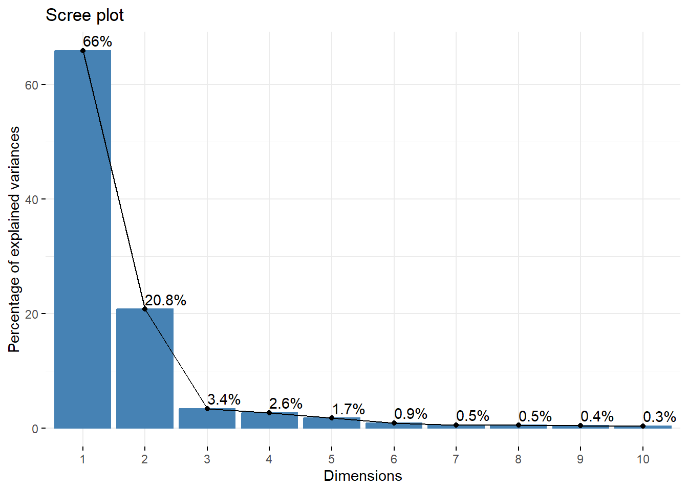
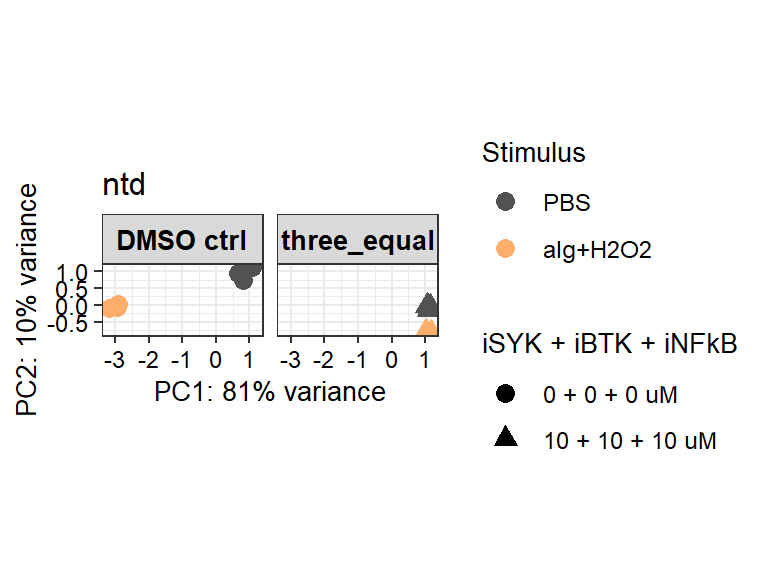
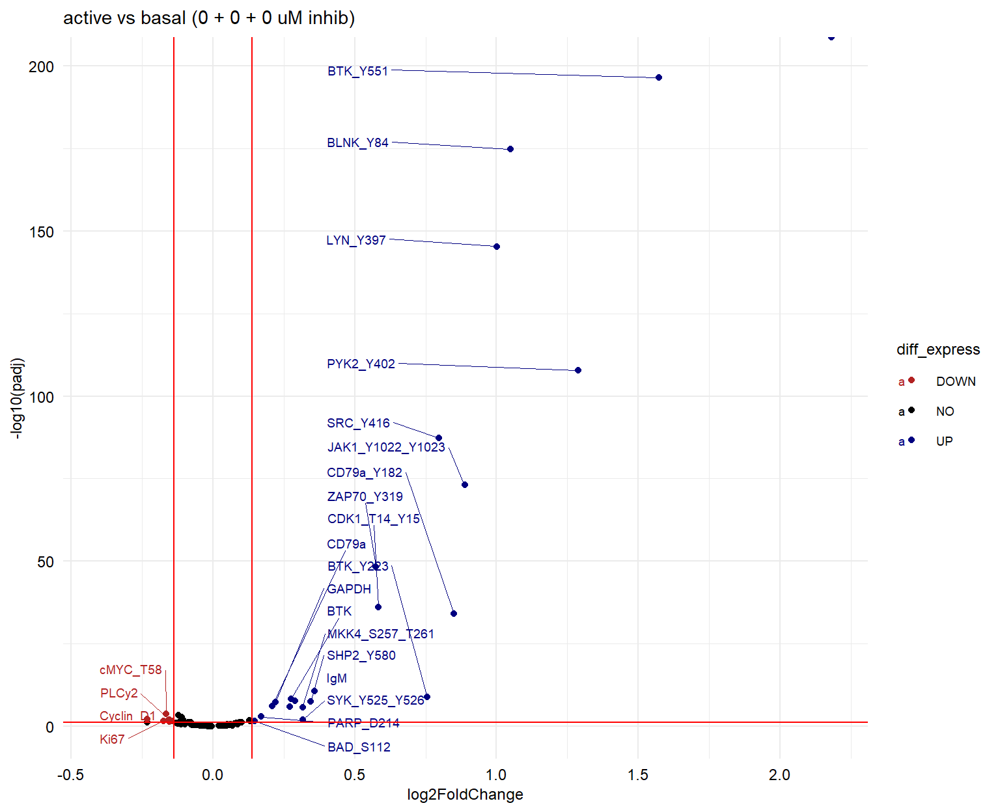
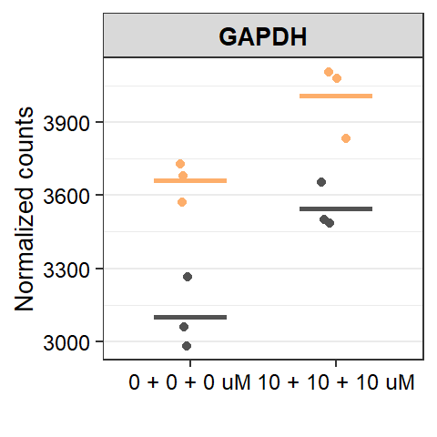
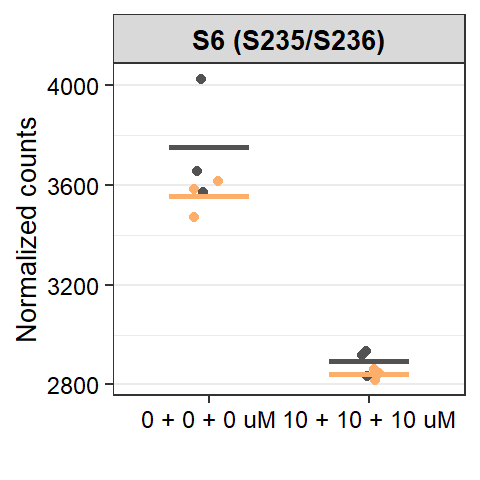

DS113 ID-seq analysis: Preliminary analysis
mwitmond
2024-05-29
Last updated: 2025-02-14
Checks: 7 0
Knit directory: chapters_DLBCL/
This reproducible R Markdown analysis was created with workflowr (version 1.7.1). The Checks tab describes the reproducibility checks that were applied when the results were created. The Past versions tab lists the development history.
Great! Since the R Markdown file has been committed to the Git repository, you know the exact version of the code that produced these results.
Great job! The global environment was empty. Objects defined in the global environment can affect the analysis in your R Markdown file in unknown ways. For reproduciblity it’s best to always run the code in an empty environment.
The command set.seed(20241022) was run prior to running
the code in the R Markdown file. Setting a seed ensures that any results
that rely on randomness, e.g. subsampling or permutations, are
reproducible.
Great job! Recording the operating system, R version, and package versions is critical for reproducibility.
Nice! There were no cached chunks for this analysis, so you can be confident that you successfully produced the results during this run.
Great job! Using relative paths to the files within your workflowr project makes it easier to run your code on other machines.
Great! You are using Git for version control. Tracking code development and connecting the code version to the results is critical for reproducibility.
The results in this page were generated with repository version 94c226d. See the Past versions tab to see a history of the changes made to the R Markdown and HTML files.
Note that you need to be careful to ensure that all relevant files for
the analysis have been committed to Git prior to generating the results
(you can use wflow_publish or
wflow_git_commit). workflowr only checks the R Markdown
file, but you know if there are other scripts or data files that it
depends on. Below is the status of the Git repository when the results
were generated:
Ignored files:
Ignored: .Rhistory
Ignored: .Rproj.user/
Ignored: analysis/figure/
Untracked files:
Untracked: code/packages_FACS.R
Untracked: code/packages_seq.R
Untracked: data/AL006_InhibCombiTest/
Untracked: data/DS102_StimTest/
Untracked: data/DS103_ViabilityTest/
Untracked: data/DS104_StimInhibTest/
Untracked: data/DS108_StimInhibIDseq/
Untracked: data/DS113_InhibCombiIDseq/
Untracked: output/DS102_StimTest/
Untracked: output/DS103_ViabilityTest/
Untracked: output/DS104_StimInhibTest/
Untracked: output/DS108_StimInhibIDseq/
Untracked: output/DS113_InhibCombiIDseq/
Untracked: output/figures/
Untracked: output/network_visual_DLBCL/
Untracked: output/network_visual_paper/
Unstaged changes:
Deleted: analysis/about.Rmd
Note that any generated files, e.g. HTML, png, CSS, etc., are not included in this status report because it is ok for generated content to have uncommitted changes.
These are the previous versions of the repository in which changes were
made to the R Markdown (analysis/DS113_s_seq_prelim.Rmd)
and HTML (docs/DS113_s_seq_prelim.html) files. If you’ve
configured a remote Git repository (see ?wflow_git_remote),
click on the hyperlinks in the table below to view the files as they
were in that past version.
| File | Version | Author | Date | Message |
|---|---|---|---|---|
| html | ffc633f | mwitmond | 2025-02-12 | Build site. |
| html | 4492de7 | mwitmond | 2024-10-22 | Build site. |
| Rmd | 6559698 | mwitmond | 2024-10-22 | Paper figs + analysis files for ch figs |
Set-up
row_order = c("A", "B", "C", "D", "E", "F", "G", "H")
col_order = c("1", "2", "3", "4", "5", "6", "7", "8", "9", "10", "11", "12")
panel_labels <- c("a", "b", "c","d", "e", "f", "g", "h", "i", "j", "k", "l", "m")
textsize <- theme(axis.text.x = element_text(colour = "grey", size = 11), #, face = "bold"
axis.text.y = element_text(colour = "grey", size = 11),
axis.title = element_text(colour = "black", size = 12),
legend.title = element_text(colour = "black", size = 12),
# legend.title = element_blank(),
legend.text = element_text(colour = "grey", size = 11),
strip.text.x = element_text(colour = "black", size = 12)
)
# textsize_small <- theme(text = element_text(size = 7, family = "sans", colour = "black"),
# plot.title = element_text(size = 8)
# )
textsize_small <- theme(axis.text.x = element_text(colour = "black", size = 9),
axis.text.y = element_text(colour = "black", size = 9),
axis.title = element_text(colour = "black", size = 10),
legend.text = element_text(colour = "black", size = 9),
title = element_text(color = "black", size = 10),
strip.text.x = element_text(colour = "black", size = 10, face = "bold"),
strip.text.y = element_text(colour = "black", size = 10, face = "bold")
)
colors_dark9 <- c("#4daf4a", "#984ea3", "#377eb8", "#ff7f00", "#f781bf", "#ffff33", "#e41a1c", "#a65628", "#999999")
colors_light12 <- c("#8dd3c7","#ffffb3","#bebada","#fb8072","#80b1d3","#fdb462","#b3de69","#fccde5","#d9d9d9","#bc80bd","#ccebc5","#ffed6f")
colors_paired10 <- c("#a6cee3", "#1f78b4", "#b2df8a", "#33a02c", "#fdbf6f", "#ff7f00", "#cab2d6", "#6a3d9a", "#fb9a99", "#e31a1c")
colors_blue9 <- c("#f7fbff", "#deebf7", "#c6dbef", "#9ecae1", "#6baed6", "#4292c6", "#2171b5", "#08519c", "#08306b")
colors_green9 <- c("#f7fcf5", "#e5f5e0", "#c7e9c0", "#a1d99b", "#74c476", "#41ab5d", "#238b45", "#006d2c", "#00441b")
colors_purple9 <- c("#fcfbfd", "#efedf5", "#dadaeb", "#bcbddc", "#9e9ac8", "#807dba", "#6a51a3", "#54278f", "#3f007d")
colors_red9 <- c("#fff5f0", "#fee0d2", "#fcbba1", "#fc9272", "#fb6a4a", "#ef3b2c", "#cb181d", "#a50f15", "#67000d")
colors_orange9 <- c("#fff5eb", "#fee6ce", "#fdd0a2", "#fdae6b", "#fd8d3c", "#f16913", "#d94801", "#a63603", "#7f2704")
colors_grey9 <- c("#ffffff", "#f0f0f0", "#d9d9d9", "#bdbdbd", "#969696", "#737373", "#525252", "#252525", "#000000")
colors_yb9 <- c("#ffffd9", "#edf8b1", "#c7e9b4", "#7fcdbb", "#41b6c4", "#1d91c0", "#225ea8", "#253494", "#081d58")
colors_pr9 <- c("#f7f4f9", "#e7e1ef", "#d4b9da", "#c994c7", "#df65b0", "#e7298a", "#ce1256", "#980043", "#67001f")
colors_proteins <- c("pCD79a (Y182)" = "#892BE1", "pSYK (Y525/Y526)" = "#1E8FFF", "pPLCy2 (Y759)" = "#20B1A9")
colors_inhib <- c("iSYK" = "#41ab5d", "iBTK" = "#4292c6", "iPI3Kd" = "#807dba", "iNFkB" = "#f16913")
colors_stim <- c("PBS" = "#525252", "aIg+H2O2" = "#fdae6b")
colors_cell <- c("HBL1" = "#df65b0", "OCI-Ly8" = "#41b6c4")
colors_conc <- c("0 + 0 + 0 uM" = "#dadaeb", "1 + 1 + 1 uM" = "#bcbddc", "2.5 + 2.5 + 2.5 uM" = "#6a51a3", "10 + 10 + 10 uM" = "#3f007d",
"10 + 0 + 0 uM" = "#54278f", "0 + 10 + 0 uM" = "#54278f", "0 + 0 + 10 uM" = "#54278f",
"2.5 + 2.5 + 0 uM" = "#9e9ac8", "2.5 + 0 + 2.5 uM" = "#9e9ac8", "0 + 2.5 + 2.5 uM" = "#9e9ac8",
"5 + 1 + 1 uM" = "#807dba", "1 + 5 + 1 uM" = "#807dba", "1 + 1 + 5 uM" = "#807dba",
"10 + 10 + 10 uM (nostain)" = "#969696")
colors_conc_uniq <- c(
"0 + 0 + 0 uM" = "#bcbddc", "1 + 1 + 1 uM" = "#9e9ac8", "2.5 + 2.5 + 2.5 uM" = "#6a51a3", "10 + 10 + 10 uM" = "#3f007d",
"10 + 0 + 0 uM" = "#006d2c", "0 + 10 + 0 uM" = "#41ab5d", "0 + 0 + 10 uM" = "#a1d99b",
"2.5 + 2.5 + 0 uM" = "#a63603", "2.5 + 0 + 2.5 uM" = "#f16913", "0 + 2.5 + 2.5 uM" = "#fdae6b",
"5 + 1 + 1 uM" = "#08519c", "1 + 5 + 1 uM" = "#4292c6", "1 + 1 + 5 uM" = "#9ecae1",
"10 + 10 + 10 uM (nostain)" = "#969696")stim_DS113 <- c("PBS", "aIg+H2O2")
stim_label <- c("basal", "activated")
inhib_DS113 <- c("iSYK", "iBTK", "iNFkB")
legend_label <- "iSYK + iBTK + iNFkB"
inhib_conc_DS113 <- c("0 + 0 + 0 uM", "1 + 1 + 1 uM", "2.5 + 2.5 + 2.5 uM", "10 + 10 + 10 uM", "10 + 0 + 0 uM", "0 + 10 + 0 uM", "0 + 0 + 10 uM", "2.5 + 2.5 + 0 uM", "2.5 + 0 + 2.5 uM", "0 + 2.5 + 2.5 uM", "5 + 1 + 1 uM", "1 + 5 + 1 uM", "1 + 1 + 5 uM", "10 + 10 + 10 uM (nostain)")
inhib_single_conc_DS113 <- c(0, 1, 2.5, 10, 5)
inhib_group_DS113 <- c("DMSO ctrl", "single", "two", "three_equal", "three_mix")Data & QC
Raw data
# Load sparse matrix format all data
counts_PlateA <- read_count_output("data/DS113_InhibCombiIDseq/counts/PlateA/featurecounts", name = "featurecounts")
meta_wellID <- read_csv("data/DS113_InhibCombiIDseq/config/DynSign.113_wellBC_metadata_seq.csv")
meta_Abs <- read_excel("data/DS113_InhibCombiIDseq/config/BulkIDseq_Ab_info_seq_analysis_202405.xlsx")
# Reshape counts in data table format
counts_dtbl <- data.frame(counts_PlateA) %>%
mutate(barcode_name = rownames(counts_PlateA)) %>% #barcode_name #Barcodename
dplyr::select(barcode_name, everything()) %>%
gather("well_BC_seq", "counts", 2:c(ncol(counts_PlateA)+1)) %>%
dplyr::filter(counts >= 1) %>% # Remove undetected proteins counts
left_join(meta_Abs) %>%
unique() %>%
# dplyr::filter(!is.na(target_nospace)) %>% # Remove barcodes not in Ab metadata (not conjugated/added in panel)
left_join(subset(meta_wellID, plate == "A")) %>% # Add sample metadata
dplyr::filter(!is.na(experiment)) %>%
arrange(plate, well)
counts_dtbl <- counts_dtbl %>%
mutate(plate_well = paste0(plate, "_", well),
stimulus = factor(stimulus, levels = stim_DS113),
inhib_conc = factor(inhib_conc, levels = inhib_conc_DS113))
# Calculate per-sample properties
data_properties <- counts_dtbl %>%
unique()%>%
group_by(plate, well_BC_seq) %>%
summarize(nCount = sum(counts),
nProt = n()) %>%
left_join(meta_wellID) %>% # Add sample metadata
mutate(stimulus = factor(stimulus, levels = stim_DS113),
inhib_conc = factor(inhib_conc, levels = inhib_conc_DS113))Table: Unfiltered data-table properties loaded into R
| nCols (#samples) | nRows (# barcodes) | |
|---|---|---|
| Plate A | 94 | 300 |
The full panel of mapped barcodes and 96 wells are present in the data table. First have a look at the total counts and number of detected protein barcodes per sample: There are a lot more proteins detected than put in the panel, due to barcode contamination and cross-ver between wells. The nostain samples have relatively low counts and proteins detected.
options(repr.plot.width = 6, repr.plot.height = 4)
ggplot(data_properties, aes(log10(nCount), nProt, color = factor(inhib_conc, levels = inhib_conc_DS113))) +
geom_point(alpha = 1, size = 1) +
facet_grid(~stimulus) +
scale_color_manual(values = colors_conc, name = "iSYK + iBTK + iNFkB") +
theme_bw() +
labs(title = "Correlation total counts and number of detected barcodes",
x = expression("Total counts Log"[10]),
y = "Detected number of protein barcodes") +
textsize_small
| Version | Author | Date |
|---|---|---|
| 4492de7 | mwitmond | 2024-10-22 |
Figure: Correlation between total counts and number of detected protein barcodes. We observe many more detected proteins than present in the staining.
As we have a 96-wells plate, we can also have a look at total counts per plate detected:
options(repr.plot.width = 10, repr.plot.height = 6)
rng <- range(log10(data_properties$nCount))
plot <- raw_grid(data = log10(data_properties$nCount), well = data_properties$well, plate_id = data_properties$plate, plate = 96, size = 6) +
scale_fill_viridis(expression("Total counts Log"[10]), limits = c(rng[1], rng[2])) +
theme_bw()
print(plot)
| Version | Author | Date |
|---|---|---|
| 4492de7 | mwitmond | 2024-10-22 |
Figure: Plate overviews of total counts.
Barcode contamination comp
Several barcodes are contaminated with <2.5% of other barcodes (all barcodes were sequenced individually to determine the contamination). As this can skew the results, especially for lowly present barcodes that are contaminated with highly present barcodes, we will compensate for this.
comp_matrix <- read_csv("data/DS113_InhibCombiIDseq/BC_compensation_matrix.csv")
data_comp <- counts_dtbl %>%
# dplyr::filter(well == "A01") %>%
dplyr::select(plate, well, barcode_name, counts) %>%
left_join(comp_matrix, by = join_by(barcode_name == BC_to_correct)) #, multiple = "all"
# Get counts of OG BC
data_comp_OG <- data_comp %>%
# dplyr::filter(well == "A01") %>%
dplyr::filter(barcode_name == OG_BC) %>%
dplyr::select(plate, well, OG_BC, counts) %>%
dplyr::rename(counts_OG_BC = counts)
# Calculate false reads
data_false <- left_join(data_comp, data_comp_OG) %>%
mutate(false_counts = (counts_OG_BC / percent_OG_BC) * percent_BC_to_correct) %>%
dplyr::filter(barcode_name != OG_BC) %>%
group_by(plate, well, barcode_name, counts) %>%
summarize(total_false_counts = sum(false_counts, na.rm = TRUE))
counts_dtbl <- counts_dtbl %>%
# dplyr::filter(well == "A01") %>%
left_join(data_false) %>%
mutate(total_false_counts = replace_na(total_false_counts, 0),
true_counts = as.integer(counts - total_false_counts),
percent_true = (true_counts / counts) * 100) %>%
dplyr::filter(!is.na(target_nospace)) # Remove barcodes not in Ab metadata (not conjugated/added in panel)
compensation <- counts_dtbl %>%
dplyr::select(plate, well, barcode_name, counts, total_false_counts, true_counts, percent_true, target_nospace)
# Calculate per-sample properties
data_properties_true <- counts_dtbl %>%
unique()%>%
group_by(plate, well_BC_seq) %>%
summarize(nCount = sum(true_counts),
nProt = n()) %>%
left_join(meta_wellID) %>% # Add sample metadata
mutate(stimulus = factor(stimulus, levels = stim_DS113),
inhib_conc = factor(inhib_conc, levels = inhib_conc_DS113))options(repr.plot.width = 6, repr.plot.height = 4)
ggplot(counts_dtbl, aes(log10(counts), log10(true_counts), color = factor(inhib_conc, levels = inhib_conc_DS113))) +
geom_point(alpha = 1, size = 0.8) +
geom_abline(intercept = 0, slope = 1, linetype = "dashed") +
facet_grid(~stimulus) +
scale_color_manual(values = colors_conc, name = "iSYK + iBTK + iNFkB") +
theme_bw() +
labs(title = "Correlation raw counts and compensated counts",
x = expression("Raw counts Log"[10]),
y = expression("Compensated counts Log"[10])) +
textsize_small
| Version | Author | Date |
|---|---|---|
| 4492de7 | mwitmond | 2024-10-22 |
ggplot(data_properties_true, aes(log10(nCount), nProt, color = factor(inhib_conc, levels = inhib_conc_DS113))) +
geom_point(alpha = 1, size = 1) +
facet_grid(~stimulus) +
scale_color_manual(values = colors_conc, name = "iSYK + iBTK + iNFkB") +
theme_bw() +
labs(title = "Correlation total counts and number of detected barcodes",
x = expression("Total counts Log"[10]),
y = "Detected number of protein barcodes") +
textsize_small
| Version | Author | Date |
|---|---|---|
| 4492de7 | mwitmond | 2024-10-22 |
Figure: Correlation between raw counts and compensated counts, and between compensated counts and detected number of barcodes. After compensation, all samples (except 2 nostain samples) have 111 detected proteins (the number of Ab in the panel).
Count normalisation
To remove variation between replicates, the data is normalised per target protein with a geometric mean scaling factor: First, the geometric mean of each target is calculated separately for each cell line, and then the median of the protein scaling factors is calculated separately for each sample.
scaling_factors <- counts_dtbl %>%
dplyr::filter(staining == "yes") %>%
# dplyr::filter() %>% #target_nospace == "GAPDH" # modification == "no"
ungroup() %>%
group_by(target_nospace) %>%
mutate(scaling_factor = counts / median(counts),
scaling_factor_geo = counts / exp(mean(log((counts)))),
true_scaling_factor = true_counts / median(true_counts),
true_scaling_factor_geo = true_counts / exp(mean(log((true_counts))))) %>%
ungroup() %>%
group_by(descript_rep) %>%
summarize(scaling_factor = median(scaling_factor), .groups = "keep",
scaling_factor_geo = median(scaling_factor_geo),
true_scaling_factor = median(true_scaling_factor),
true_scaling_factor_geo = median(true_scaling_factor_geo, na.rm = TRUE))
counts_dtbl <- counts_dtbl %>%
dplyr::filter(staining == "yes") %>%
left_join(scaling_factors) %>%
ungroup() %>%
mutate(counts_norm = counts / scaling_factor,
counts_norm_geo = counts / scaling_factor_geo,
true_counts_norm = true_counts / true_scaling_factor,
true_counts_norm_geo = true_counts / true_scaling_factor_geo)
counts_dtbl <- dplyr::filter(counts_dtbl, !is.na(target_nospace))
# Calculate per-sample properties
data_properties_norm <- counts_dtbl %>%
unique()%>%
group_by(plate, well_BC_seq) %>%
summarize(nCount_norm = sum(counts_norm_geo),
nProt = n()) %>%
left_join(meta_wellID) %>% # Add sample metadata
mutate(stimulus = factor(stimulus, levels = stim_DS113),
inhib_conc = factor(inhib_conc, levels = inhib_conc_DS113))
data_properties_norm_true <- counts_dtbl %>%
unique()%>%
group_by(plate, well_BC_seq) %>%
summarize(nCount_norm = sum(true_counts_norm_geo),
nProt = n()) %>%
left_join(meta_wellID) %>% # Add sample metadata
mutate(stimulus = factor(stimulus, levels = stim_DS113),
inhib_conc = factor(inhib_conc, levels = inhib_conc_DS113))options(repr.plot.width = 6, repr.plot.height = 4)
ggplot(counts_dtbl, aes(log10(counts), log10(true_counts_norm_geo), color = factor(inhib_conc, levels = inhib_conc_DS113))) +
geom_point(alpha = 1, size = 0.8) +
geom_abline(intercept = 0, slope = 1, linetype = "dashed") +
facet_grid(~stimulus) +
scale_color_manual(values = colors_conc, name = "iSYK + iBTK + iNFkB") +
theme_bw() +
labs(title = "Correlation raw counts and normalised counts",
x = expression("Raw counts Log"[10]),
y = expression("Normalised counts Log"[10])) +
textsize_small
| Version | Author | Date |
|---|---|---|
| 4492de7 | mwitmond | 2024-10-22 |
ggplot(data_properties_norm_true, aes(log10(nCount_norm), nProt, color = factor(inhib_conc, levels = inhib_conc_DS113))) +
geom_point(alpha = 1, size = 1) +
facet_grid(~stimulus) +
scale_color_manual(values = colors_conc, name = "iSYK + iBTK + iNFkB") +
theme_bw() +
labs(title = "Correlation normalised counts and number of detected barcodes",
x = expression("Normalised counts Log"[10]),
y = "Detected number of protein barcodes") +
textsize_small
| Version | Author | Date |
|---|---|---|
| 4492de7 | mwitmond | 2024-10-22 |
Figure: Correlation between raw counts and compensated counts.
Data wrangling
Calculate the following:
- Mean + sd for replicates (true_counts + true_counts_norm_geo)
Manual fold changes of all samples compared to the mean of 0 uM (DMSO) + PBS samples
% phosphoprotein of total protein (only for proteins with both total + phospho targets)
# Calculate mean + sd of true_counts and true_counts_norm_geo
mean_dtbl <- counts_dtbl %>%
dplyr::group_by(description, target_nospace) %>%
summarise(
counts_sd = sd(true_counts, na.rm = T),
counts = mean(true_counts, na.rm = T),
counts_norm_sd = sd(true_counts_norm_geo, na.rm = T),
counts_norm = mean(true_counts_norm_geo, na.rm = T)
)
# Add metadata
mean_dtbl <- mean_dtbl %>%
left_join(dplyr::select(counts_dtbl,
c(barcode_name, DS_Ab_nr, target, modification, epitope, marker_cell, marker_pathway, marker_pathway_detail, isotype, DS_barcode_nr, DS_barcode_seq, target_nospace, cell_line, stimulus, stim_clean, inhibitor, inhib_new, inhib_conc, inhib_conc_new, inhib_group, iSYK_conc_uM, iBTK_conc_uM, iNFkB_conc_uM, inhib_conc_text, inhib_text_new, staining, description))) %>%
distinct()prot <- "BTK_Y551"
# prot <- "VAV1_Y174"
# Raw (compensated) counts
plot1 <- ggplot(subset(mean_dtbl, staining == "yes" & target_nospace == prot)) +
geom_col(aes(
x = factor(inhib_conc, levels = inhib_conc_DS113),
y = counts,
group = stimulus,
fill = stimulus),
position = "dodge2") +
geom_errorbar(aes(
x = factor(inhib_conc, levels = inhib_conc_DS113),
ymin = counts - counts_sd,
ymax = counts + counts_sd,
group = stimulus),
position = position_dodge2(width = 0.9),
width = 0.9,
) +
facet_wrap(vars(factor(cell_line, labels = "Raw (compensated)")), scales = "free_y") +
theme_bw() +
# scale_y_log10() +
RotatedAxis() +
scale_fill_manual(values = colors_stim) +
labs(x = "", y = "", title = prot) +
textsize_small
# Normalised counts
plot2 <- ggplot(subset(mean_dtbl, staining == "yes" & target_nospace == prot)) +
geom_col(aes(
x = factor(inhib_conc, levels = inhib_conc_DS113),
y = counts_norm,
group = stimulus,
fill = stimulus),
position = "dodge2") +
geom_errorbar(aes(
x = factor(inhib_conc, levels = inhib_conc_DS113),
ymin = counts_norm - counts_norm_sd,
ymax = counts_norm + counts_norm_sd,
group = stimulus),
position = position_dodge2(width = 0.9),
width = 0.9,
) +
facet_wrap(vars(factor(cell_line, labels = "Normalised")), scales = "free_y") +
theme_bw() +
# scale_y_log10() +
RotatedAxis() +
scale_fill_manual(values = colors_stim) +
labs(x = "", y = "", title = prot) +
textsize_small
plot_grid(plot1, plot2, ncol = 2)
| Version | Author | Date |
|---|---|---|
| 4492de7 | mwitmond | 2024-10-22 |
Figure: Mean signal (+ sd) of replicates for BTK (Y551). Raw counts on the left, normalised counts on the right. Normalisation removes the variation between replicates but not the inhibitor effects.
# Manually calculate the fold change of true_counts and true_counts_norm_geo
# Use the mean of same inhibitor conc + PBS as baseline
counts_FC0 <- counts_dtbl %>%
dplyr::filter(stimulus == "PBS") %>% # & inhib_conc == "0 uM (DMSO)"
group_by(cell_line, inhib_conc_text, target_nospace) %>%
summarise(counts_0 = mean(true_counts),
counts_norm_0 = mean(true_counts_norm_geo))
counts_dtbl <- left_join(counts_dtbl, counts_FC0) %>%
mutate(man_FC_counts = (true_counts / counts_0),
man_log2FC_counts = log2(man_FC_counts),
man_FC_norm = (true_counts_norm_geo / counts_norm_0),
man_log2FC_norm = log2(man_FC_norm))
# Calculate mean + sd of manual fold changes of replicates
mean_FC <- counts_dtbl %>%
dplyr::group_by(description, target_nospace) %>%
summarise(
FC_counts_sd = sd(man_FC_counts, na.rm = T),
FC_counts = mean(man_FC_counts, na.rm = T),
log2FC_counts_sd = sd(man_log2FC_counts, na.rm = T),
log2FC_counts = mean(man_log2FC_counts, na.rm = T),
FC_norm_sd = sd(man_FC_norm, na.rm = T),
FC_norm = mean(man_FC_norm, na.rm = T),
log2FC_norm_sd = sd(man_log2FC_norm, na.rm = T),
log2FC_norm = mean(man_log2FC_norm, na.rm = T)
)
mean_dtbl <- mean_dtbl %>%
left_join(mean_FC) %>%
distinct()prot <- "BTK_Y551"
# Normalised counts
plot <- ggplot(subset(counts_dtbl, staining == "yes" & cell_line == "HBL1" & target_nospace == prot)) +
geom_point(aes(
x = factor(inhib_conc, levels = inhib_conc_DS108, labels = inhib_conc_label),
y = man_FC_norm,
color = stimulus)) +
facet_wrap(vars(factor(inhibitor, levels = inhib_DS108))) +
theme_bw() +
# scale_y_log10() +
scale_color_manual(values = colors_stim) +
labs(x = "", y = "Fold change over PBS (same inhib conc) \n(normalised counts)", title = prot) +
textsize_small
print(plot)Figure: Manually calculated fold change of signal compared to 0 uM inhibitor (DMSO ctrl) + PBS stimulation for BTK (Y551) (HBL1 cells, normalised counts).
Finally, we will save the datasets as .csv file
IDseq_data_sample.csv: Dataset of counts per protein per sample
IDseq_data_condition.csv: Dataset of counts per protein per condition (mean of replicates)
# Dataset of counts per protein per sample
meta_cols_well <- c("plate_well", "plate", "well", "experiment", "cell_line", "stimulus", "stim_clean", "inhibitor", "inhib_new", "inhib_conc", "inhib_conc_new", "inhib_group", "iSYK_conc_uM", "iBTK_conc_uM", "iNFkB_conc_uM", "inhib_conc_text", "inhib_text_new", "replicate", "description", "descript_rep",
"target_nospace", "target", "modification", "marker_cell", "marker_pathway", "marker_pathway_detail", "barcode_name", "DS_Ab_nr",
"true_counts", "true_scaling_factor_geo", "true_counts_norm_geo")
data_well_all <- counts_dtbl %>%
arrange(plate_well, target_nospace) %>%
dplyr::select(meta_cols_well) %>% # reorder columns for a more logical order
dplyr::rename(marker_path = marker_pathway, # rename some columns for clarity
marker_path_detail = marker_pathway_detail,
Ab_BC_nr = barcode_name,
counts = true_counts,
scaling_factor = true_scaling_factor_geo,
counts_norm = true_counts_norm_geo)
write.csv(data_well_all, file = "output/DS113_InhibCombiIDseq/IDseq_ann/IDseq_data_sample.csv", row.names = F)
# Dataset of mean counts per protein per condition (replicates combined)
meta_cols_mean <- c("cell_line", "stimulus", "stim_clean", "inhibitor", "inhib_new", "inhib_conc", "inhib_conc_new", "inhib_group", "iSYK_conc_uM", "iBTK_conc_uM", "iNFkB_conc_uM", "inhib_conc_text", "inhib_text_new", "description",
"target_nospace", "target", "modification", "marker_cell", "marker_pathway", "marker_pathway_detail", "barcode_name", "DS_Ab_nr",
"counts", "counts_sd", "counts_norm", "counts_norm_sd")
data_mean_all <- mean_dtbl %>%
dplyr::select(meta_cols_mean) %>% # reorder cols to more logical order
dplyr::rename(marker_path = marker_pathway, # rename some columns for clarity
marker_path_detail = marker_pathway_detail,
Ab_BC_nr = barcode_name)
write.csv(data_mean_all, file = "output/DS113_InhibCombiIDseq/IDseq_ann/IDseq_data_condition.csv", row.names = F)rm(list = ls(pattern = "Plate"))
rm(list = ls(pattern = "comp"))
gc() used (Mb) gc trigger (Mb) max used (Mb)
Ncells 9345699 499.2 14474182 773.1 14474182 773.1
Vcells 16798120 128.2 26573924 202.8 22078266 168.5Counts analysis
Counts per sample
To gain insight into the effect of experimental conditions on total signal, we first have a look at the total (raw) and normalised counts per sample.
# Compensated counts
fig_sample_true <- ggplot(data_properties_true, aes(inhib_conc, nCount, color = stimulus)) +
geom_jitter(alpha = 1, size = 1, width = 0.1) +
facet_wrap(vars(factor(inhib_group, levels = inhib_group_DS113)), nrow = 1, scales = "free_x") +
theme_bw() +
RotatedAxis() +
scale_y_log10() +
scale_color_manual(values = c("PBS" = "black", "aIg+H2O2" = "orange"), name = "") +
labs(x = "Inhibitor conc", y = "Compensated counts (log10 scale)", title = "Compensated counts") +
textsize_small
print(fig_sample_true)
| Version | Author | Date |
|---|---|---|
| 4492de7 | mwitmond | 2024-10-22 |
# Normalised compensated counts
fig_sample_norm <- ggplot(data_properties_norm_true, aes(inhib_conc, nCount_norm, color = stimulus)) +
geom_jitter(alpha = 1, size = 1, width = 0.1) +
facet_wrap(vars(factor(inhib_group, levels = inhib_group_DS113)), nrow = 1, scales = "free_x") +
theme_bw() +
RotatedAxis() +
# scale_y_log10() +
scale_color_manual(values = c("PBS" = "black", "aIg+H2O2" = "orange"), name = "") +
labs(x = "Inhibitor conc", y = "Normalised compensated counts", title = "Normalised compensated counts") +
textsize_small
print(fig_sample_norm)
| Version | Author | Date |
|---|---|---|
| 4492de7 | mwitmond | 2024-10-22 |
# Compensated counts
fig_sample_true <- ggplot(subset(data_properties_true, staining == "yes"), aes(inhib_conc, nCount, color = stimulus)) +
geom_jitter(alpha = 1, size = 1, width = 0.1) +
facet_wrap(vars(factor(inhib_group, levels = inhib_group_DS113)), nrow = 1, scales = "free_x") +
theme_bw() +
RotatedAxis() +
scale_y_log10(limits = c(5e4, 5e5)) +
scale_color_manual(values = c("PBS" = "black", "aIg+H2O2" = "orange"), name = "") +
labs(x = "Inhibitor conc", y = "Compensated counts", title = "Compensated counts") +
textsize_small
# Normalised compensated counts
fig_sample_norm <- ggplot(data_properties_norm_true, aes(inhib_conc, nCount_norm, color = stimulus)) +
geom_jitter(alpha = 1, size = 1, width = 0.1) +
facet_wrap(vars(factor(inhib_group, levels = inhib_group_DS113)), nrow = 1, scales = "free_x") +
theme_bw() +
RotatedAxis() +
scale_y_log10(limits = c(5e4, 5e5)) +
scale_color_manual(values = c("PBS" = "black", "aIg+H2O2" = "orange"), name = "") +
labs(x = "Inhibitor conc", y = "Normalised compensated counts", title = "Normalised compensated counts") +
textsize_small
plot_grid(fig_sample_true, fig_sample_norm, ncol = 2)
| Version | Author | Date |
|---|---|---|
| 4492de7 | mwitmond | 2024-10-22 |
Figure: Distribution counts per sample with compensation (left) and normalisation (right).
Counts per Ab
We can also look at the counts per Ab for selected samples to get an indication of any differences between proteins and between aIg+H2O2 and PBS stimulation.
# Compensated counts
fig_Ab_true <- ggplot(unique(subset(counts_dtbl, inhib_conc == "0 + 0 + 0 uM")),
aes(x = reorder(target_nospace, true_counts),
y = true_counts,
color = as.factor(stimulus),
shape = as.factor(replicate))) +
geom_point(alpha = 0.7) +
scale_x_reordered() +
RotatedAxis() +
# theme(axis.text.x = element_text(angle = 90, hjust = 1, vjust = 0.5, colour = "black", size = 6)) +
scale_y_log10(
breaks = trans_breaks("log10", function(x) 10^x),
labels = trans_format("log10", math_format(10^.x))) +
annotation_logticks(sides = "l") +
labs(x = "Protein", y = "Compensated counts", title = "Compensated counts") +
theme_bw() +
facet_wrap(~inhib_conc_text) +
RotatedAxis() +
scale_color_colorblind() +
textsize_small
print(fig_Ab_true)
| Version | Author | Date |
|---|---|---|
| 4492de7 | mwitmond | 2024-10-22 |
Figure: Distribution of compensated counts per Ab-barcode for the 0 uM (DMSO) samples (non-normalised).
# Compensated counts
fig_Ab_norm <- ggplot(unique(subset(counts_dtbl, inhib_conc == "0 + 0 + 0 uM")),
aes(x = reorder(target_nospace, true_counts_norm_geo),
y = true_counts_norm_geo,
color = as.factor(stimulus),
shape = as.factor(replicate))) +
geom_point(alpha = 0.7) +
scale_x_reordered() +
RotatedAxis() +
# theme(axis.text.x = element_text(angle = 90, hjust = 1, vjust = 0.5, colour = "black", size = 6)) +
scale_y_log10(
breaks = trans_breaks("log10", function(x) 10^x),
labels = trans_format("log10", math_format(10^.x))) +
annotation_logticks(sides = "l") +
labs(x = "Protein", y = "Normalised compensated counts", title = "Normalised compensated counts") +
theme_bw() +
facet_wrap(~inhib_conc_text) +
RotatedAxis() +
scale_color_colorblind() +
textsize_small
print(fig_Ab_norm)
| Version | Author | Date |
|---|---|---|
| 4492de7 | mwitmond | 2024-10-22 |
Figure: Distribution of normalised compensated counts per Ab-barcode for the 0 uM (DMSO) samples. Here we see some protein targets that clearly show a difference between the aIg+H2O2 and PBS samples.
plot_grid(fig_Ab_true, fig_Ab_norm, ncol = 1)
| Version | Author | Date |
|---|---|---|
| 4492de7 | mwitmond | 2024-10-22 |
# Compensated
fig_Ab_true_HBL1 <- ggplot(unique(subset(counts_dtbl, inhib_conc == "10 + 10 + 10 uM")),
aes(x = reorder(target_nospace, true_counts),
y = true_counts,
color = as.factor(stimulus),
shape = as.factor(replicate))) +
geom_point(alpha = 0.7) +
scale_x_reordered() +
theme(axis.text.x = element_text(angle = 90, hjust = 1, vjust = 0.5, colour = "black", size = 6)) +
scale_y_log10(
breaks = trans_breaks("log10", function(x) 10^x),
labels = trans_format("log10", math_format(10^.x))) +
annotation_logticks(sides = "l") +
labs(x = "Protein", y = "Compensated counts", title = "Compensated counts") +
theme_bw() +
facet_wrap(~inhib_conc_text) +
RotatedAxis() +
scale_color_colorblind() +
textsize_small
# Normalised
fig_Ab_norm_HBL1 <- ggplot(unique(subset(counts_dtbl, inhib_conc == "10 + 10 + 10 uM")),
aes(x = reorder(target_nospace, true_counts_norm_geo),
y = true_counts_norm_geo,
color = as.factor(stimulus),
shape = as.factor(replicate))) +
geom_point(alpha = 0.7) +
scale_x_reordered() +
theme(axis.text.x = element_text(angle = 90, hjust = 1, vjust = 0.5, colour = "black", size = 6)) +
scale_y_log10(
breaks = trans_breaks("log10", function(x) 10^x),
labels = trans_format("log10", math_format(10^.x))) +
annotation_logticks(sides = "l") +
labs(x = "Protein", y = "Normalised compensated counts", title = "Normalised compensated counts") +
theme_bw() +
facet_wrap(~inhib_conc_text) +
RotatedAxis() +
scale_color_colorblind() +
textsize_small
plot_grid(fig_Ab_true_HBL1, fig_Ab_norm_HBL1, ncol = 1)
| Version | Author | Date |
|---|---|---|
| 4492de7 | mwitmond | 2024-10-22 |
Figure: Distribution of counts per Ab-barcode for the HBL1 0 uM iSYK (DMSO) samples. The normalisation removes the variation between replicates, but preserves the variation between proteins and highlights the differences between aIg+H2O2 and PBS stimulated samples.
PCA
Principal component analysis on all samples (package: FactoMineR)
Data
# Cleaned data
# data_well_all
# Prepare data for FactoMineR package
# cts: dataframe with wells as row names, proteins as column names, and count data as cell values
# coldata: dataframe with wells as row names and all metadata as columns
cts <- data_well_all %>%
dplyr::filter(counts >= 1) %>%
dplyr::select(target_nospace, plate_well, counts_norm) %>%
dplyr::filter(!is.na(counts_norm)) %>%
spread(target_nospace, counts_norm) %>%
replace(is.na(.), 0)
cts <- column_to_rownames(cts, "plate_well")
metadata_cols <- c("plate_well", "plate", "well", "experiment", "stimulus", "inhibitor", "inhib_conc", "inhib_group", "iSYK_conc_uM", "iBTK_conc_uM", "iNFkB_conc_uM", "inhib_conc_text", "replicate", "description", "descript_rep")
coldata <- data.frame(plate_well = rownames(cts)) %>%
left_join(distinct(dplyr::select(data_well_all, all_of(metadata_cols)))) %>%
mutate(stimulus = factor(stimulus, levels = stim_DS113),
inhib_conc = factor(inhib_conc, levels = inhib_conc_DS113),
inhib_group = factor(inhib_group, levels = inhib_group_DS113)) #If necessary, make factors of some metadata columns
rownames(coldata) <- coldata$plate_well# Results
pca_results <- PCA(cts, scale.unit = FALSE, ncp = 5, graph = FALSE)
# Percentage variance explained by each PC
pca_expl_var <- as.data.frame(get_eigenvalue(pca_results)) %>%
rownames_to_column("PC") %>%
pull(var = variance.percent, name = PC) %>%
round(digits = 1)
# Results focused on variables (proteins)
pca_variab <- get_pca_var(pca_results)
# head(variab$contrib)
# Results focused on individuals (wells)
pca_indiv <- get_pca_ind(pca_results)
# head(indiv$contrib)
pca_data <- as.data.frame(pca_indiv$coord[, 1:3]) %>%
rownames_to_column("plate_well") %>%
dplyr::rename(PC1 = Dim.1, PC2 = Dim.2, PC3 = Dim.3) %>%
left_join(coldata)Visualisation
Basic
# Variance explained by each PC (eigenvalues)
fviz_eig(pca_results, addlabels = TRUE)
| Version | Author | Date |
|---|---|---|
| 4492de7 | mwitmond | 2024-10-22 |
# fviz_pca_var(results_HBL1, col.var = "black")
# Quality of representation for variables
# corrplot(variab_HBL1$cos2, is.corr = FALSE)
# corrplot(variab_HBL1$contrib, is.corr = FALSE)
contrib_2.5p <- as.data.frame(pca_variab$contrib) %>%
dplyr::filter(Dim.1 >= 2.5 | Dim.2 >= 2.5 | Dim.3 >= 2.5) %>% # | Dim.4 >= 1 | Dim.5 >= 1
dplyr::rename(PC1 = Dim.1, PC2 = Dim.2, PC3 = Dim.3, PC4 = Dim.4, PC5 = Dim.5) %>%
dplyr::select(c(PC1, PC2, PC3)) %>%
as.matrix()
corrplot(contrib_2.5p, is.corr = FALSE, method = "circle", outline = TRUE,
tl.col = "black", cl.ratio = 0.75, cl.offset = 1,
title = " ")
| Version | Author | Date |
|---|---|---|
| 4492de7 | mwitmond | 2024-10-22 |
# Top10 contributing proteins to PC1-3
fig_PC1 <- fviz_contrib(pca_results, choice = "var", axes = 1, top = 10)
fig_PC2 <- fviz_contrib(pca_results, choice = "var", axes = 2, top = 10)
fig_PC3 <- fviz_contrib(pca_results, choice = "var", axes = 3, top = 10)
plot_grid(fig_PC1, fig_PC2, fig_PC3, ncol = 3)
| Version | Author | Date |
|---|---|---|
| 4492de7 | mwitmond | 2024-10-22 |
# fviz_pca_ind(pca_results,
# axes = c(1, 2),
# geom.ind = "point",
# mean.point = FALSE,
# col.ind = paste(coldata$inhib_conc),
# addEllipses = TRUE)
# fviz_pca_ind(pca_results,
# axes = c(1, 3),
# geom.ind = "point",
# mean.point = FALSE,
# col.ind = paste(coldata$inhib_text_new),
# addEllipses = TRUE)
# fviz_pca_ind(pca_results,
# axes = c(2, 3),
# geom.ind = "point",
# mean.point = FALSE,
# # col.ind = paste(coldata$cell_line, coldata$stimulus),
# col.ind = paste(coldata$inhib_text_new),
# addEllipses = TRUE)2D
# pca_data
fig_PC12 <- ggplot(pca_data) +
geom_point(aes(x = PC1, y = PC2, shape = stimulus, color = inhib_conc), size = 3) +
# geom_point(aes(x = PC1, y = PC2, shape = stimulus, color = inhib_text_new), size = 3, alpha = 0.8) +
facet_wrap(~inhib_group, ncol = 1) +
scale_color_manual(values = colors_conc_uniq, name = "iSYK + iBTK + iNFkB") +
xlab(paste0("PC1: ", pca_expl_var[1], "% variance")) +
ylab(paste0("PC2: ", pca_expl_var[2], "% variance")) +
ggtitle("Normalised counts\nPC1 vs PC2") +
theme_bw() +
theme(legend.position = "none") +
textsize_small
# fig_PC12
fig_PC13 <- ggplot(pca_data) +
geom_point(aes(x = PC1, y = PC3, shape = stimulus, color = inhib_conc), size = 3) +
facet_wrap(~inhib_group, ncol = 1) +
# scale_color_manual(values = c(colors_orange9[3:7], colors_grey9[3:7]), name = "Stim - Inhib conc") +
scale_color_manual(values = colors_conc_uniq, name = "iSYK + iBTK + iNFkB") +
xlab(paste0("PC1: ", pca_expl_var[1], "% variance")) +
ylab(paste0("PC3: ", pca_expl_var[3], "% variance")) +
ggtitle("\nPC1 vs PC3") +
theme_bw() +
theme(legend.position = "none") +
textsize_small
# fig_PC13
fig_PC23 <- ggplot(pca_data) +
geom_point(aes(x = PC2, y = PC3, shape = stimulus, color = inhib_conc), size = 3) +
facet_wrap(~inhib_group, ncol = 1) +
scale_color_manual(values = colors_conc_uniq, name = "iSYK + iBTK + iNFkB") +
xlab(paste0("PC2: ", pca_expl_var[2], "% variance")) +
ylab(paste0("PC3: ", pca_expl_var[3], "% variance")) +
ggtitle("\nPC2 vs PC3") +
theme_bw() +
# theme(legend.position = "none") +
textsize_small
# fig_PC23
fig <- plot_grid(fig_PC12, fig_PC13, fig_PC23, ncol = 3, align = "h", rel_widths = c(1, 1, 1.5))
print(fig)
| Version | Author | Date |
|---|---|---|
| 4492de7 | mwitmond | 2024-10-22 |
3D
# 3D scatter plot of PC1-3
# stimulus
fig <- plot_ly(pca_data, x = ~PC1, y = ~PC2, z = ~PC3, color = ~stimulus, colors = colors_stim) %>%
add_markers(size = 12) %>%
layout(title = paste("Variance explained:", sum(pca_expl_var[1:3])))
fig# inhib_conc
fig <- plot_ly(pca_data, x = ~PC1, y = ~PC2, z = ~PC3, color = ~inhib_conc, colors = colors_conc_uniq) %>%
add_markers(size = 12) %>%
layout(title = paste("Variance explained:", sum(pca_expl_var[1:3])))
figUMAP
# Data
pca_data_5PC <- as.data.frame(pca_indiv$coord[, 1:5]) %>%
rownames_to_column("plate_well") %>%
dplyr::rename(PC1 = Dim.1, PC2 = Dim.2, PC3 = Dim.3, PC4 = Dim.4, PC53 = Dim.5) %>%
left_join(coldata)
# UMAP data reduction
umap_pca <- umap::umap(as.data.frame(pca_indiv$coord[, 1:5]))
# umap.defaults
# head(umap_pca$layout)
umap_pca_ann <- as.data.frame(umap_pca$layout) %>%
rownames_to_column("plate_well") %>%
dplyr::rename(UMAP1 = V1, UMAP2 = V2) %>%
left_join(coldata)
# Basic fig of everything
fig <- ggplot(umap_pca_ann, aes(x = UMAP1, y = UMAP2)) +
geom_point(aes(shape = stimulus, color = inhib_conc), size = 2) +
scale_color_manual(values = colors_conc_uniq, name = "iSYK + iBTK + iNFkB") +
ggtitle("UMAP with PC1-5") +
theme_bw() +
textsize_small
fig
| Version | Author | Date |
|---|---|---|
| 4492de7 | mwitmond | 2024-10-22 |
fig <- ggplot(umap_pca_ann, aes(x = UMAP1, y = UMAP2)) +
geom_point(aes(shape = stimulus, color = inhib_conc), size = 2) +
facet_wrap(~inhib_group, ncol = 1) +
scale_color_manual(values = colors_conc_uniq, name = "iSYK + iBTK + iNFkB") +
ggtitle("UMAP with PC1-5") +
theme_bw() +
textsize_small
fig
| Version | Author | Date |
|---|---|---|
| 4492de7 | mwitmond | 2024-10-22 |
# Remove unnecessary files to clear up memory
rm(list = ls(pattern = "pca"))
rm(list = ls(pattern = "PC"))
gc() used (Mb) gc trigger (Mb) max used (Mb)
Ncells 9549472 510 14474182 773.1 14474182 773.1
Vcells 17422374 133 31968708 244.0 25106744 191.6Basal vs activated
Now, we will look at the basal vs activated signaling levels with and without inhibitors.
DEseq2
https://bioconductor.org/packages/release/bioc/vignettes/DESeq2/inst/doc/DESeq2.html
Separate comp
DESeq2 analysis parameters:
PBS and aIg+H2O2 stimulus, 0 + 0 + 0 uM and 10 + 10 + 10 uM (12 samples)
Compensated counts (>= 1)
Model design: inhib_stim (ref: 0 + 0 + 0 uM - PBS)
Parameter options: stimulus + inhib_conc + inhib_conc_text + description
# Prepare data to load into DESeq dataset
# cts: dataframe with proteins as row names, wells as column names, and count data as cell values
# coldata: dataframe with wells as row names and all metadata as columns
counts_dtbl <- counts_dtbl %>%
mutate(inhib_stim = paste(inhib_conc, "-", stimulus))
cts <- counts_dtbl %>%
dplyr::filter(inhib_conc %in% c("0 + 0 + 0 uM", "10 + 10 + 10 uM") & true_counts >= 1) %>%
dplyr::select(target_nospace, plate_well, true_counts) %>%
dplyr::filter(!is.na(true_counts)) %>%
spread(plate_well, true_counts) %>%
replace(is.na(.), 0)
rownames(cts) <- cts$target_nospace
cts <- as.matrix(as.data.frame(cts[2:ncol(cts)]))
metadata_cols <- c("plate_well", "plate", "well", "experiment", "stimulus", "inhibitor", "inhib_conc", "inhib_group", "iSYK_conc_uM", "iBTK_conc_uM", "iNFkB_conc_uM", "inhib_conc_text", "replicate", "description", "descript_rep", "inhib_stim")
coldata <- data.frame(plate_well = colnames(cts)) %>%
left_join(distinct(dplyr::select(counts_dtbl, all_of(metadata_cols)))) %>%
mutate(stimulus = factor(stimulus, levels = stim_DS113),
inhib_group = factor(inhib_group, levels = inhib_group_DS113),
inhib_conc = factor(inhib_conc, levels = inhib_conc_DS113),
inhib_stim = paste(inhib_conc, "-", stimulus)) #If necessary, make factors of some metadata columns
rownames(coldata) <- coldata$plate_well
# Create DESeq object
# First define how the model is designed. Place most important parameter last
modeldesign <- ~ inhib_stim
# Then create the DESeq dataset
dds <- DESeqDataSetFromMatrix(countData = cts,
colData = coldata,
design = modeldesign)
# Define the reference samples for design parameter
dds$inhib_stim <- relevel(dds$inhib_stim, ref = "0 + 0 + 0 uM - PBS")
# Run DESeq2:
# This function performs a default analysis through the steps:
# Estimation of size factors: estimateSizeFactors
# Estimation of dispersion: estimateDispersions
# Negative Binomial GLM fitting and Wald statistics: nbinomWaldTest
# dds <- estimateSizeFactors(dds, controlGenes = ctrl_genes) # OPTIONAL: normalise data with specified control genes
dds <- DESeq(dds, test = "Wald", fitType = "local")
DESeq_comparisons <- resultsNames(dds) # lists the coefficients
DESeq_comparisons[1] "Intercept"
[2] "inhib_stim_0...0...0.uM...aIg.H2O2_vs_0...0...0.uM...PBS"
[3] "inhib_stim_10...10...10.uM...aIg.H2O2_vs_0...0...0.uM...PBS"
[4] "inhib_stim_10...10...10.uM...PBS_vs_0...0...0.uM...PBS" Log2FC results: Significance threshold: padj < 0.05
# Create results for all DESeq_comparisons
results_active_wo <- results(dds, name = "inhib_stim_0...0...0.uM...aIg.H2O2_vs_0...0...0.uM...PBS", alpha = 0.05)
results_active_w <- results(dds, contrast = c("inhib_stim", "10 + 10 + 10 uM - aIg+H2O2", "10 + 10 + 10 uM - PBS"), alpha = 0.05)
results_PBS <- results(dds, name = "inhib_stim_10...10...10.uM...PBS_vs_0...0...0.uM...PBS", alpha = 0.05)
results_stim <- results(dds, contrast = c("inhib_stim", "10 + 10 + 10 uM - aIg+H2O2", "0 + 0 + 0 uM - aIg+H2O2"), alpha = 0.05)
list_results <- list(results_active_wo, results_active_w, results_PBS, results_stim)
# Results summary
summary(results_active_wo, padj = 0.05)
out of 111 with nonzero total read count
adjusted p-value < 0.05
LFC > 0 (up) : 24, 22%
LFC < 0 (down) : 14, 13%
outliers [1] : 0, 0%
low counts [2] : 0, 0%
(mean count < 518)
[1] see 'cooksCutoff' argument of ?results
[2] see 'independentFiltering' argument of ?results# sum(results_aIg$padj < 0.05, na.rm = TRUE)par(mfrow = c(1,3), mar = c(4,4,2,1))
# par(mfrow = c(1,1))
signcutoff <- 0.05
plotMA(results_active_wo, alpha = signcutoff, main = "aIg+H2O2 vs PBS\nw/o inhib")
plotMA(results_active_w, alpha = signcutoff, main = "aIg+H2O2 vs PBS\nw/ inhib")
plotMA(results_stim, alpha = signcutoff, main = "0 vs 10 uM equal\nin activated cells")
| Version | Author | Date |
|---|---|---|
| 4492de7 | mwitmond | 2024-10-22 |
Data transformation
# Normtransform (log2(n+1))
ntd <- normTransform(dds)
# Variance stabilising transform
vsd <- vst(dds, blind = FALSE, nsub = nrow(dds))
# Regularized log transform
rld <- rlog(dds, blind = FALSE)PCA
list_datatransform <- list(ntd, vsd, rld)
titles_datatransform <- c("ntd", "vsd", "rld")
for (data in 1:3){
options(repr.plot.width = 4, repr.plot.height = 3)
pcaData <- plotPCA(unlist(list_datatransform[[data]]), intgroup = c("stimulus", "inhib_group", "inhib_conc"), returnData = TRUE)
percentVar <- round(100 * attr(pcaData, "percentVar"))
plot <- ggplot(pcaData, aes(PC1, PC2, color = factor(stimulus, levels = stim_DS113), shape = factor(inhib_conc, levels = inhib_conc_DS113))) + #, shape = factor(cell_line, levels = cells_DS113)
geom_point(size = 3) +
xlab(paste0("PC1: ", percentVar[1], "% variance")) +
ylab(paste0("PC2: ", percentVar[2], "% variance")) +
coord_fixed() +
facet_wrap(~inhib_group) +
scale_color_manual(values = colors_stim, name = "Stimulus") +
scale_shape_manual(values = c(16, 17), name = "iSYK + iBTK + iNFkB") +
ggtitle(titles_datatransform[data]) +
theme_bw() +
textsize_small
print(plot)
}
| Version | Author | Date |
|---|---|---|
| 4492de7 | mwitmond | 2024-10-22 |
| Version | Author | Date |
|---|---|---|
| 4492de7 | mwitmond | 2024-10-22 |
| Version | Author | Date |
|---|---|---|
| 4492de7 | mwitmond | 2024-10-22 |
Figure: PCA of all samples included in the DESeq2 analysis. PC1 shows a clear separation of the activated samples without inhibitors and the other conditions, and PC2 separates the samples with and without inhibitors. The different types of data transformation also give similar results.
Variance
options(repr.plot.width = 6, repr.plot.height = 3)
msd_ntd <- meanSdPlot(assay(ntd))
| Version | Author | Date |
|---|---|---|
| 4492de7 | mwitmond | 2024-10-22 |
plot_ntd <- msd_ntd$gg +
labs(x = "Ranked mean", y = "Standard deviation", title = "Norm (log2(n+1))") +
theme_bw() + theme(legend.position = "none") + textsize_small
msd_vsd <- meanSdPlot(assay(vsd))
| Version | Author | Date |
|---|---|---|
| 4492de7 | mwitmond | 2024-10-22 |
plot_vsd <- msd_vsd$gg +
labs(x = "Ranked mean", y = "Standard deviation", title = "Variance stabilising") +
theme_bw() + theme(legend.position = "none") + textsize_small
msd_rld <- meanSdPlot(assay(rld))
| Version | Author | Date |
|---|---|---|
| 4492de7 | mwitmond | 2024-10-22 |
plot_rld <- msd_rld$gg +
labs(x = "Ranked mean", y = "Standard deviation", title = "Regularized log") +
theme_bw() + theme(legend.position = "none") + textsize_small
plot_grid(plot_ntd, plot_vsd, plot_rld, ncol = 3)
| Version | Author | Date |
|---|---|---|
| 4492de7 | mwitmond | 2024-10-22 |
Sample-to-sample distances
options(repr.plot.width = 5, repr.plot.height = 5)
for (data in 1:3){
sampleDists <- dist(t(assay(unlist(list_datatransform[[data]]))))
sampleDistMatrix <- as.matrix(sampleDists)
# rownames(sampleDistMatrix) <- paste(list_datatransform[[data]]$cell_line,
# list_datatransform[[data]]$stimulus,
# # list_datatransform[[data]]$inhibitor,
# list_datatransform[[data]]$replicate,
# sep = " - ")
rownames(sampleDistMatrix) <- list_datatransform[[data]]$descript_rep
colnames(sampleDistMatrix) <- NULL
colors <- colorRampPalette(rev(brewer.pal(9, "Blues")))(255)
plot <- pheatmap(sampleDistMatrix,
clustering_distance_rows = sampleDists,
clustering_distance_cols = sampleDists,
col = colors,
main = titles_datatransform[data])
print(plot)
}
| Version | Author | Date |
|---|---|---|
| 4492de7 | mwitmond | 2024-10-22 |
| Version | Author | Date |
|---|---|---|
| 4492de7 | mwitmond | 2024-10-22 |
| Version | Author | Date |
|---|---|---|
| 4492de7 | mwitmond | 2024-10-22 |
Volcano
Highlight the significantly changing proteins:
padj < 0.05
log2FC > log2(1.1)
# Function to prepare DESeq2 results for volcano plots
# Standard log2FC filter = log2(1.5); standard padj filter = 0.05
prep_forvulcano <- function(dataset = dataset, padj_filter = 0.05, foldchange_filter = log2(1.5)){
dataset$proteins <- rownames(dataset)
dataset$target_nospace <- rownames(dataset)
# Add a column for differential expression
dataset$diff_express <- "NO"
dataset$diff_express[dataset$log2FoldChange > foldchange_filter & dataset$padj < padj_filter] <- "UP"
dataset$diff_express[dataset$log2FoldChange < -foldchange_filter & dataset$padj < padj_filter] <- "DOWN"
# Add a column for labeling
dataset$delabel <- NA
dataset$delabel[dataset$diff_express != "NO"] <- dataset$proteins[dataset$diff_express != "NO"]
# Add Ab metadata
dataset <- left_join(as.data.frame(dataset), meta_Abs)
return(dataset)
}
# Apply function to each dataset
names_results_volc <- c("volc_active_wo", "volc_active_w", "volc_PBS", "volc_stim")
for(dataset in c(1:length(list_results))){
assign(names_results_volc[dataset], prep_forvulcano(dataset = list_results[[dataset]], foldchange_filter = log2(1.1)))
}# Function to create volcano plots
# Standard log2FC threshold = log2(1.5); standard padj threshold = 0.05
vulcanoplot_results <- function(data = data,
title_plot = "",
xintercepts = c(-log2(1.5), log2(1.5)),
yintercept = -log10(0.05),
line_colors = c("red"),
point_colors = c(UP = "navy", NO = "black", DOWN = "firebrick")){
# Create a plot (ggplot2)
ggplot(data = as.data.frame(data), aes(x = log2FoldChange, y = -log10(padj), col = diff_express, label = delabel)) +
geom_point() +
theme_minimal() +
geom_text_repel(size = 2.5,
segment.size = 0.2,
hjust = 0,
direction = "y",
nudge_y = -log10(0.005),
nudge_x = ifelse(data$log2FoldChange < 0, -0.4 - data$log2FoldChange, 0.4 - data$log2FoldChange)
) +
scale_color_manual(values = point_colors) +
geom_vline(xintercept = xintercepts, col = line_colors) +
geom_hline(yintercept = yintercept, col = line_colors) +
ggtitle(title_plot) +
theme(axis.text.x = element_text(colour = 'black', size = 9),
axis.text.y = element_text(colour = 'black', size = 9),
text = element_text(size = 9),
axis.text = element_text(size = 9),
plot.title = element_text(size = 11))
}
# Apply function to each dataset
list_results_volc <- list(volc_active_wo, volc_active_w, volc_PBS, volc_stim)
titles_volcano <- c("active vs basal (0 + 0 + 0 uM inhib)",
"active vs basal (10 + 10 + 10 uM inhib)",
"10 + 10 + 10 uM vs 0 + 0 + 0 uM inhib (basal)",
"10 + 10 + 10 uM vs 0 + 0 + 0 uM inhib (active)")
# titles_volcano <- names_results_volc
for(dataset in c(1:length(list_results_volc))){
plot <- vulcanoplot_results(data = list_results_volc[[dataset]],
title_plot = titles_volcano[dataset],
xintercepts = c(-log2(1.1), log2(1.1)))
print(plot)
}
| Version | Author | Date |
|---|---|---|
| 4492de7 | mwitmond | 2024-10-22 |
| Version | Author | Date |
|---|---|---|
| 4492de7 | mwitmond | 2024-10-22 |
| Version | Author | Date |
|---|---|---|
| 4492de7 | mwitmond | 2024-10-22 |
| Version | Author | Date |
|---|---|---|
| 4492de7 | mwitmond | 2024-10-22 |
Figure: Volcano plot of DESeq2 model comparisons.
Activation results in the increase of many phospho-proteins. In the presence of 10 + 10 + 10 uM inhibitors, activation is drastically reduced (only a few total protein levels). In the basal state, only a few proteins are significantly decreased by high inhibitor concentrations, while many phospho-proteins are decreased by inhibitors in the activated state.
Heatmap
We continue with the regularised log transformed results (see Data transform section). We create heatmaps of significant changes:
padj < 0.05
log2FC > log2(1.1)
# Function to filter the data
# Standard log2FC filter = log2(1.5); standard padj filter = 0.05
filter_heatmap <- function(dataset = dataset, padj_filter = 0.05, foldchange_filter = log2(1.5), select_top = TRUE, select_n = 10) {
data <- as.data.frame(dataset) %>%
dplyr::filter(padj <= padj_filter & abs(log2FoldChange) >= foldchange_filter) %>%
arrange(-log2FoldChange)
rownames(data) <- data$target_nospace
# Select top 10 proteins with most increased and decreased expression
if (select_top == TRUE) {
data_top <- data %>%
slice_max(order_by = abs(log2FoldChange), n = select_n)
return(data_top)
} else {
return(data)
}
}
# Apply function to each dataset
names_results_heat <- c("heat_active_wo", "heat_active_w", "heat_PBS", "heat_stim")
for(dataset in c(1:length(list_results_volc))){
assign(names_results_heat[[dataset]], filter_heatmap(dataset = list_results_volc[[dataset]], select_top = FALSE, foldchange_filter = log2(1.1)))
dataset
}
# heat_results_all <- filter_heatmap(dataset = volc_cell, padj_filter = 1, foldchange_filter = 0, select_top = FALSE)
# Subset the full dataframe to get metadata for heatmap plotting
data_heatmap <- as.data.frame(colData(dds)[, c("stimulus", "inhib_conc")]) %>%
arrange(factor(stimulus, levels = stim_DS113), factor(inhib_conc, levels = inhib_conc_DS113))# , fig.width=10, fig.height=10
# options(repr.plot.width = 10, repr.plot.height = 10)
# active vs basal (0 + 0 + 0 uM inhib)
heat_active_wo$marker_pathway[is.na(heat_active_wo$marker_pathway)] <- "Other"
ann_colors_man <- list(stimulus = colors_stim,
inhib_conc = colors_conc
# modification = c(phospho = "#f768a1", no = "grey", cleaved = "#fff7bc"),
# marker_pathway = setNames(colors_light12[1:length(unique(heat_active_wo$marker_pathway))], unique(heat_active_wo$marker_pathway))
)
# All significant proteins in all comparisons
sign_prot_sep <- sort(unique(c(heat_active_wo$target_nospace,
heat_active_w$target_nospace,
heat_PBS$target_nospace,
heat_stim$target_nospace)))
# Get the rld transformed data for the heatmap and scale per row
# data_active_wo <- t(scale(t(assay(rld)[unique(c(heat_active_wo$target_nospace)), rownames(data_heatmap)])))
data_act_sep <- t(scale(t(assay(rld)[sign_prot_sep, rownames(data_heatmap)])))
# sort_hclust <- function(...) as.hclust(dendsort(as.dendrogram(...)))
# data_cluster_rows <- sort_hclust(hclust(dist(data_cell)))
# plot(data_cluster_rows, main = "Unsorted Dendrogram", xlab = "", sub = "")
ComplexHeatmap::pheatmap(
data_act_sep,
cluster_rows = TRUE,
show_rownames = TRUE,
show_colnames = FALSE,
cluster_cols = FALSE,
# annotation_row = heat_cell[, c("modification", "marker_pathway")],
# annotation_row = heat_HBL1[, "marker_pathway", drop = FALSE],
annotation_col = data_heatmap,
annotation_colors = ann_colors_man,
# scale = "row",
colorRampPalette(c("navy", "white", "firebrick3"))(50),
column_split = data_heatmap$inhib_conc,
# column_split = data_heatmap$stimulus,
# row_split = subset(heat_active_wo)$modification,
cellwidth = 15,
cellheight = 15,
fontsize = 12,
# border_color = NA,
# main = "scaled per row, ComplexHeatmap"
)
| Version | Author | Date |
|---|---|---|
| 4492de7 | mwitmond | 2024-10-22 |
Figure: Heatmap of all significant results in all comparisons.
There are many phospho-proteins that are activated upon stimulation, and are inhibited by 10 + 10 + 10 uM inhibitors. pCREB and pS6 are inhibited in both basal and activated conditions. Various non-phospho-proteins are increased in both basal and activated conditions (more so in the activated conditions). And lastly, some proteins are decreased upon stimulation, and less decreased upon inhibitor treatment.
Interaction
Add later.
Protein comparisons
Finally, we visualised the normalised true counts of all significant proteins in the comparisons (40 in total).
# Create a dataset with all relevant information on significantly changing results
# List of all significantly changing proteins
sign_prot_sep [1] "AKT_T308" "AMPKb1_S182" "ATF2_T71"
[4] "BAD_S112" "BIM" "BLNK_Y84"
[7] "BTK" "BTK_Y223" "BTK_Y551"
[10] "CD20" "CD43" "CD79a"
[13] "CD79a_Y182" "CDK1_T14_Y15" "cFOS_S32"
[16] "cMYC_T58" "CREB_S133" "Cyclin_D1"
[19] "GAPDH" "GSK3b_S9" "IgM"
[22] "IKKa_b_S176_S180" "JAK1_Y1022_Y1023" "Ki67"
[25] "LYN_Y397" "MAPK_p38_T180_Y182" "MKK4_S257_T261"
[28] "PARP_D214" "PKCb1" "PLCy2"
[31] "PYK2_Y402" "S6_S235_S236" "S6_S240_S244"
[34] "SHP2" "SHP2_Y580" "SRC_Y416"
[37] "STAT6" "SYK_Y525_Y526" "VAV1_Y174"
[40] "ZAP70_Y319" # Datasets generated during analysis
# heat_active_wo + heat_active_w + heat_PBS + heat_stim: DESeq2 data of sign prot (repl combined), log2FC and pvalues per protein
# data_act_sep: matrix of data for heatmap, well (col) x prot (row) (rld transformed, scaled per row)
# counts_dtbl: all input info (counts, compensation, normalisation), tidy format, organised per well + prot
# mean_dtbl: same as counts_dtbl but with mean values of repl
# Make a tidy dataset of the heatmap data matrix + combine with counts_dtbl
clean_data_well_sep <- data.frame(data_act_sep) %>%
mutate(target_nospace = rownames(data_act_sep)) %>%
dplyr::select(target_nospace, everything()) %>%
gather("plate_well", "heatmap_value", 2:c(ncol(data_act_sep)+1)) %>%
left_join(counts_dtbl) %>%
arrange(plate_well, target_nospace) %>%
dplyr::filter(target_nospace %in% sign_prot_sep) %>%
dplyr::select(c(meta_cols_well, heatmap_value)) %>% # reorder columns for a more logical order
dplyr::rename(marker_path = marker_pathway, # rename some columns for clarity
marker_path_detail = marker_pathway_detail,
Ab_BC_nr = barcode_name,
counts = true_counts,
scaling_factor = true_scaling_factor_geo,
counts_norm = true_counts_norm_geo,
heatmap = heatmap_value)
prot_labels_sep <- sort(setNames(unique(pull(clean_data_well_sep, target)), unique(pull(clean_data_well_sep, target_nospace))))
# Make a tidy dataset with significantly changing proteins, and log2FC + pvalues from DESeq2 analysis
heat_list_act_sep <- list(heat_active_wo, heat_active_w, heat_PBS, heat_stim)
heat_names <- c("sign_data_active_wo", "sign_data_active_w", "sign_data_PBS", "sign_data_stim")
heat_suffix <- c("_actWO", "_actW", "_PBS", "_stim")
for (heat_data in c(1:length(heat_list_act_sep))) {
# print(heat_data)
alt_data <- heat_list_act_sep[[heat_data]] %>%
dplyr::filter(target_nospace %in% sign_prot_sep) %>%
dplyr::select(target_nospace, target, modification, marker_cell, marker_pathway, marker_pathway_detail, isotype, barcode_name, DS_Ab_nr,
baseMean, log2FoldChange, lfcSE, stat, pvalue, padj, diff_express) %>% # reorder cols to more logical order
dplyr::rename(marker_path = marker_pathway, # rename some columns for clarity
marker_path_detail = marker_pathway_detail,
Ab_BC_nr = barcode_name,
base_mean = baseMean,
log2FC = log2FoldChange,
log2FC_se = lfcSE) %>%
dplyr::rename_with(~paste0(., heat_suffix[heat_data]), c("log2FC", "log2FC_se", "stat", "pvalue", "padj", "diff_express"))
assign(heat_names[heat_data], alt_data)
heat_data
}
clean_data_sign_sep <- list(sign_data_active_wo, sign_data_active_w, sign_data_PBS, sign_data_stim) %>%
purrr::reduce(full_join) %>%
arrange(target_nospace)
# Make a tidy dataset with mean values per condition (replicates combined)
clean_data_mean_sep <- mean_dtbl %>%
dplyr::filter(target_nospace %in% sign_prot_sep & inhib_conc %in% c("0 + 0 + 0 uM", "10 + 10 + 10 uM")) %>%
dplyr::select(all_of(meta_cols_mean)) %>% # reorder cols to more logical order
dplyr::rename(marker_path = marker_pathway, # rename some columns for clarity
marker_path_detail = marker_pathway_detail,
Ab_BC_nr = barcode_name)plot <- ggplot(clean_data_well_sep,
aes(factor(inhib_conc, levels = inhib_conc_DS113),
counts_norm,
color = stimulus,
shape = inhib_conc)
) +
geom_jitter(alpha = 1, size = 1.5, width = 0.1) +
facet_wrap(vars(factor(target)), ncol = 5) +
theme_bw() +
scale_y_log10() +
scale_color_manual(values = colors_stim, name = "Stimulus") +
labs(x = "", y = "Normalized counts (log10 scale)") +
textsize_small
print(plot)
| Version | Author | Date |
|---|---|---|
| 4492de7 | mwitmond | 2024-10-22 |
Figure: Normalised counts for all significantly changing proteins. For some proteins the effect size is quite small.
options(repr.plot.width = 3.5, repr.plot.height = 2.5)
# Re-redesigned fig
# filt_clean_data_mean <- clean_data_mean_sep %>%
# dplyr::group_by(cell_line, stimulus, target_nospace) %>%
# summarise(mean_counts_norm_sd = sd(counts_norm_sd, na.rm = T),
# mean_counts_norm = mean(counts_norm, na.rm = T))
for(protein in sign_prot_sep) {
plot <- ggplot() +
geom_jitter(data = subset(clean_data_well_sep, target_nospace == protein),
aes(factor(inhib_conc, levels = inhib_conc_DS113), counts_norm, color = stimulus),
alpha = 1, size = 1.5, width = 0.1) +
geom_errorbar(data = subset(clean_data_mean_sep, target_nospace == protein),
aes(factor(inhib_conc, levels = inhib_conc_DS113),
ymin = counts_norm,
ymax = counts_norm,
group = inhib_conc,
color = stimulus),
width = 0.5, size = 1) +
facet_wrap(vars(factor(target))) +
# scale_y_log10() +
scale_color_manual(values = colors_stim, name = "Stimulus") +
labs(x = "", y = "Normalized counts") +
theme_bw() +
theme(legend.position = "none", panel.grid.major.x = element_blank()) +
textsize_small
print(plot)
}
| Version | Author | Date |
|---|---|---|
| 4492de7 | mwitmond | 2024-10-22 |
| Version | Author | Date |
|---|---|---|
| 4492de7 | mwitmond | 2024-10-22 |
| Version | Author | Date |
|---|---|---|
| 4492de7 | mwitmond | 2024-10-22 |
| Version | Author | Date |
|---|---|---|
| 4492de7 | mwitmond | 2024-10-22 |
| Version | Author | Date |
|---|---|---|
| 4492de7 | mwitmond | 2024-10-22 |
| Version | Author | Date |
|---|---|---|
| 4492de7 | mwitmond | 2024-10-22 |

| Version | Author | Date |
|---|---|---|
| 4492de7 | mwitmond | 2024-10-22 |
| Version | Author | Date |
|---|---|---|
| 4492de7 | mwitmond | 2024-10-22 |
| Version | Author | Date |
|---|---|---|
| 4492de7 | mwitmond | 2024-10-22 |
| Version | Author | Date |
|---|---|---|
| 4492de7 | mwitmond | 2024-10-22 |
| Version | Author | Date |
|---|---|---|
| 4492de7 | mwitmond | 2024-10-22 |
| Version | Author | Date |
|---|---|---|
| 4492de7 | mwitmond | 2024-10-22 |
| Version | Author | Date |
|---|---|---|
| 4492de7 | mwitmond | 2024-10-22 |
| Version | Author | Date |
|---|---|---|
| 4492de7 | mwitmond | 2024-10-22 |

| Version | Author | Date |
|---|---|---|
| 4492de7 | mwitmond | 2024-10-22 |
| Version | Author | Date |
|---|---|---|
| 4492de7 | mwitmond | 2024-10-22 |
| Version | Author | Date |
|---|---|---|
| 4492de7 | mwitmond | 2024-10-22 |
| Version | Author | Date |
|---|---|---|
| 4492de7 | mwitmond | 2024-10-22 |

| Version | Author | Date |
|---|---|---|
| 4492de7 | mwitmond | 2024-10-22 |
| Version | Author | Date |
|---|---|---|
| 4492de7 | mwitmond | 2024-10-22 |
| Version | Author | Date |
|---|---|---|
| 4492de7 | mwitmond | 2024-10-22 |
| Version | Author | Date |
|---|---|---|
| 4492de7 | mwitmond | 2024-10-22 |
| Version | Author | Date |
|---|---|---|
| 4492de7 | mwitmond | 2024-10-22 |
| Version | Author | Date |
|---|---|---|
| 4492de7 | mwitmond | 2024-10-22 |
| Version | Author | Date |
|---|---|---|
| 4492de7 | mwitmond | 2024-10-22 |

| Version | Author | Date |
|---|---|---|
| 4492de7 | mwitmond | 2024-10-22 |
| Version | Author | Date |
|---|---|---|
| 4492de7 | mwitmond | 2024-10-22 |
| Version | Author | Date |
|---|---|---|
| 4492de7 | mwitmond | 2024-10-22 |
| Version | Author | Date |
|---|---|---|
| 4492de7 | mwitmond | 2024-10-22 |
| Version | Author | Date |
|---|---|---|
| 4492de7 | mwitmond | 2024-10-22 |
| Version | Author | Date |
|---|---|---|
| 4492de7 | mwitmond | 2024-10-22 |

| Version | Author | Date |
|---|---|---|
| 4492de7 | mwitmond | 2024-10-22 |
| Version | Author | Date |
|---|---|---|
| 4492de7 | mwitmond | 2024-10-22 |
| Version | Author | Date |
|---|---|---|
| 4492de7 | mwitmond | 2024-10-22 |
| Version | Author | Date |
|---|---|---|
| 4492de7 | mwitmond | 2024-10-22 |
| Version | Author | Date |
|---|---|---|
| 4492de7 | mwitmond | 2024-10-22 |
| Version | Author | Date |
|---|---|---|
| 4492de7 | mwitmond | 2024-10-22 |
| Version | Author | Date |
|---|---|---|
| 4492de7 | mwitmond | 2024-10-22 |
| Version | Author | Date |
|---|---|---|
| 4492de7 | mwitmond | 2024-10-22 |
| Version | Author | Date |
|---|---|---|
| 4492de7 | mwitmond | 2024-10-22 |
Save data
Save all information and datasets as .csv file
Separate analysis comparing conditions:
sep_sign_proteins.txt: List of significantly changing proteins
sep_sign_DESeq2data.csv: Dataset with significantly changing proteins, and log2FC + pvalues from DESeq2 analysis
sep_sign_sample.csv: Dataset of counts per sample per protein + heatmap data for significantly changing proteins
sep_sign_condition.csv: Dataset of counts per condition (mean of repl) per protein for significantly changing proteins
# List of significantly changing proteins: sign_prot_cell
write(sign_prot_sep, file = "output/DS113_InhibCombiIDseq/IDseq_sign_threshold/basal_active/sep_sign_proteins.txt")
# Dataset with significantly changing proteins, and log2FC + pvalues from DESeq2 analysis: clean_data_sign
write.csv(clean_data_sign_sep, file = "output/DS113_InhibCombiIDseq/IDseq_sign_threshold/basal_active/sep_sign_DESeq2data.csv", row.names = F)
# Dataset of counts per protein per sample + heatmap data for significantly changing proteins: clean_data_well
write.csv(clean_data_well_sep, file = "output/DS113_InhibCombiIDseq/IDseq_sign_threshold/basal_active/sep_sign_sample.csv", row.names = F)
# Dataset of counts per protein per condition (mean of repl) for significantly changing proteins: clean_data_mean
write.csv(clean_data_mean_sep, file = "output/DS113_InhibCombiIDseq/IDseq_sign_threshold/basal_active/sep_sign_condition.csv", row.names = F)# Remove unnecessary files to clear up memory
rm(list = ls(pattern = "results_"))
rm(list = ls(pattern = "volc_"))
rm(list = ls(pattern = "heat_"))
rm(list = ls(pattern = "list_"))
rm(list = ls(pattern = "names_"))
rm(list = ls(pattern = "titles_"))
rm(list = ls(pattern = "clean_"))
rm(list = ls(pattern = "sign_"))
gc() used (Mb) gc trigger (Mb) max used (Mb)
Ncells 9943460 531.1 14474182 773.1 14474182 773.1
Vcells 18314535 139.8 31968708 244.0 25106744 191.6Active w/ inhib
DEseq2
https://bioconductor.org/packages/release/bioc/vignettes/DESeq2/inst/doc/DESeq2.html
Comp to 0+0+0 uM
DESeq2 analysis parameters:
aIg+H2O2 stimulus only, all inhibitor conditions (39 samples)
Compensated counts (>= 1)
Model design: inhib_conc (ref: 0 + 0 + 0 uM)
Parameter options: stimulus + inhib_conc + inhib_conc_text + description
# Prepare data to load into DESeq dataset
# cts: dataframe with proteins as row names, wells as column names, and count data as cell values
# coldata: dataframe with wells as row names and all metadata as columns
cts <- counts_dtbl %>%
dplyr::filter(stimulus == "aIg+H2O2" & true_counts >= 1) %>%
dplyr::select(target_nospace, plate_well, true_counts) %>%
dplyr::filter(!is.na(true_counts)) %>%
spread(plate_well, true_counts) %>%
replace(is.na(.), 0)
rownames(cts) <- cts$target_nospace
cts <- as.matrix(as.data.frame(cts[2:ncol(cts)]))
metadata_cols <- c("plate_well", "plate", "well", "experiment", "stimulus", "inhibitor", "inhib_conc", "inhib_group", "iSYK_conc_uM", "iBTK_conc_uM", "iNFkB_conc_uM", "inhib_conc_text", "replicate", "description", "descript_rep")
coldata <- data.frame(plate_well = colnames(cts)) %>%
left_join(distinct(dplyr::select(counts_dtbl, all_of(metadata_cols)))) %>%
mutate(stimulus = factor(stimulus, levels = stim_DS113),
inhib_group = factor(inhib_group, levels = inhib_group_DS113),
inhib_conc = factor(inhib_conc, levels = inhib_conc_DS113)) #If necessary, make factors of some metadata columns
rownames(coldata) <- coldata$plate_well
# Create DESeq object
# First define how the model is designed. Place most important parameter last
modeldesign <- ~ inhib_conc
# Then create the DESeq dataset
dds <- DESeqDataSetFromMatrix(countData = cts,
colData = coldata,
design = modeldesign)
# Define the reference samples for design parameter
dds$inhib_conc <- relevel(dds$inhib_conc, ref = "0 + 0 + 0 uM")
# Run DESeq2:
# This function performs a default analysis through the steps:
# Estimation of size factors: estimateSizeFactors
# Estimation of dispersion: estimateDispersions
# Negative Binomial GLM fitting and Wald statistics: nbinomWaldTest
# dds <- estimateSizeFactors(dds, controlGenes = ctrl_genes) # OPTIONAL: normalise data with specified control genes
dds <- DESeq(dds, test = "Wald", fitType = "local")
DESeq_comparisons <- resultsNames(dds) # lists the coefficients
DESeq_comparisons [1] "Intercept"
[2] "inhib_conc_1...1...1.uM_vs_0...0...0.uM"
[3] "inhib_conc_2.5...2.5...2.5.uM_vs_0...0...0.uM"
[4] "inhib_conc_10...10...10.uM_vs_0...0...0.uM"
[5] "inhib_conc_10...0...0.uM_vs_0...0...0.uM"
[6] "inhib_conc_0...10...0.uM_vs_0...0...0.uM"
[7] "inhib_conc_0...0...10.uM_vs_0...0...0.uM"
[8] "inhib_conc_2.5...2.5...0.uM_vs_0...0...0.uM"
[9] "inhib_conc_2.5...0...2.5.uM_vs_0...0...0.uM"
[10] "inhib_conc_0...2.5...2.5.uM_vs_0...0...0.uM"
[11] "inhib_conc_5...1...1.uM_vs_0...0...0.uM"
[12] "inhib_conc_1...5...1.uM_vs_0...0...0.uM"
[13] "inhib_conc_1...1...5.uM_vs_0...0...0.uM" Log2FC results: Significance threshold: padj < 0.05
# Create results for all DESeq_comparisons
results_comp0_1_1_1 <- results(dds, name = "inhib_conc_1...1...1.uM_vs_0...0...0.uM", alpha = 0.05)
results_comp0_2.5_2.5_2.5 <- results(dds, name = "inhib_conc_2.5...2.5...2.5.uM_vs_0...0...0.uM", alpha = 0.05)
results_comp0_10_10_10 <- results(dds, name = "inhib_conc_10...10...10.uM_vs_0...0...0.uM", alpha = 0.05)
results_comp0_10_0_0 <- results(dds, name = "inhib_conc_10...0...0.uM_vs_0...0...0.uM", alpha = 0.05)
results_comp0_0_10_0 <- results(dds, name = "inhib_conc_0...10...0.uM_vs_0...0...0.uM", alpha = 0.05)
results_comp0_0_0_10 <- results(dds, name = "inhib_conc_0...0...10.uM_vs_0...0...0.uM", alpha = 0.05)
results_comp0_2.5_2.5_0 <- results(dds, name = "inhib_conc_2.5...2.5...0.uM_vs_0...0...0.uM", alpha = 0.05)
results_comp0_2.5_0_2.5 <- results(dds, name = "inhib_conc_2.5...0...2.5.uM_vs_0...0...0.uM", alpha = 0.05)
results_comp0_0_2.5_2.5 <- results(dds, name = "inhib_conc_0...2.5...2.5.uM_vs_0...0...0.uM", alpha = 0.05)
results_comp0_5_1_1 <- results(dds, name = "inhib_conc_5...1...1.uM_vs_0...0...0.uM", alpha = 0.05)
results_comp0_1_5_1 <- results(dds, name = "inhib_conc_1...5...1.uM_vs_0...0...0.uM", alpha = 0.05)
results_comp0_1_1_5 <- results(dds, name = "inhib_conc_1...1...5.uM_vs_0...0...0.uM", alpha = 0.05)
list_results <- list(results_comp0_1_1_1, results_comp0_2.5_2.5_2.5, results_comp0_10_10_10,
results_comp0_10_0_0, results_comp0_0_10_0, results_comp0_0_0_10,
results_comp0_2.5_2.5_0, results_comp0_2.5_0_2.5, results_comp0_0_2.5_2.5,
results_comp0_5_1_1, results_comp0_1_5_1, results_comp0_1_1_5)
# Results summary
summary(results_comp0_2.5_2.5_2.5, padj = 0.05)
out of 111 with nonzero total read count
adjusted p-value < 0.05
LFC > 0 (up) : 10, 9%
LFC < 0 (down) : 22, 20%
outliers [1] : 0, 0%
low counts [2] : 0, 0%
(mean count < 514)
[1] see 'cooksCutoff' argument of ?results
[2] see 'independentFiltering' argument of ?results# sum(results_aIg$padj < 0.05, na.rm = TRUE)par(mfrow = c(1,3), mar = c(4,4,2,1))
# par(mfrow = c(1,1))
signcutoff <- 0.05
plotMA(results_comp0_2.5_2.5_2.5, alpha = signcutoff, main = "2.5+2.5+2.5 uM vs\n0+0+0 uM")
plotMA(results_comp0_0_0_10, alpha = signcutoff, main = "0+0+10 uM vs\n0+0+0 uM")
plotMA(results_comp0_5_1_1, alpha = signcutoff, main = "5+1+1 uM vs\n0+0+0 uM")
| Version | Author | Date |
|---|---|---|
| 4492de7 | mwitmond | 2024-10-22 |
Data transformation
# Normtransform (log2(n+1))
ntd <- normTransform(dds)
# Variance stabilising transform
vsd <- vst(dds, blind = FALSE, nsub = nrow(dds))
# Regularized log transform
rld <- rlog(dds, blind = FALSE)PCA
list_datatransform <- list(ntd, vsd, rld)
titles_datatransform <- c("ntd", "vsd", "rld")
for (data in 1:3){
options(repr.plot.width = 6, repr.plot.height = 6)
pcaData <- plotPCA(unlist(list_datatransform[[data]]), intgroup = c("stimulus", "inhib_group", "inhib_conc"), returnData = TRUE)
percentVar <- round(100 * attr(pcaData, "percentVar"))
plot <- ggplot(pcaData, aes(PC1, PC2, shape = inhib_group, color = factor(inhib_conc, levels = inhib_conc_DS113))) +
geom_point(size = 3) +
xlab(paste0("PC1: ", percentVar[1], "% variance")) +
ylab(paste0("PC2: ", percentVar[2], "% variance")) +
coord_fixed() +
# facet_wrap(~inhib_group) +
scale_color_manual(values = colors_conc_uniq, name = legend_label) +
ggtitle(titles_datatransform[data]) +
theme_bw() +
textsize_small
print(plot)
}
| Version | Author | Date |
|---|---|---|
| 4492de7 | mwitmond | 2024-10-22 |
| Version | Author | Date |
|---|---|---|
| 4492de7 | mwitmond | 2024-10-22 |
| Version | Author | Date |
|---|---|---|
| 4492de7 | mwitmond | 2024-10-22 |
Figure: PCA of all samples included in the DESeq2 analysis.
Variance
options(repr.plot.width = 6, repr.plot.height = 3)
msd_ntd <- meanSdPlot(assay(ntd))
| Version | Author | Date |
|---|---|---|
| 4492de7 | mwitmond | 2024-10-22 |
plot_ntd <- msd_ntd$gg +
labs(x = "Ranked mean", y = "Standard deviation", title = "Norm (log2(n+1))") +
theme_bw() + theme(legend.position = "none") + textsize_small
msd_vsd <- meanSdPlot(assay(vsd))
| Version | Author | Date |
|---|---|---|
| 4492de7 | mwitmond | 2024-10-22 |
plot_vsd <- msd_vsd$gg +
labs(x = "Ranked mean", y = "Standard deviation", title = "Variance stabilising") +
theme_bw() + theme(legend.position = "none") + textsize_small
msd_rld <- meanSdPlot(assay(rld))
| Version | Author | Date |
|---|---|---|
| 4492de7 | mwitmond | 2024-10-22 |
plot_rld <- msd_rld$gg +
labs(x = "Ranked mean", y = "Standard deviation", title = "Regularized log") +
theme_bw() + theme(legend.position = "none") + textsize_small
plot_grid(plot_ntd, plot_vsd, plot_rld, ncol = 3)
| Version | Author | Date |
|---|---|---|
| 4492de7 | mwitmond | 2024-10-22 |
Sample-to-sample distances
options(repr.plot.width = 5, repr.plot.height = 5)
for (data in 1:3){
sampleDists <- dist(t(assay(unlist(list_datatransform[[data]]))))
sampleDistMatrix <- as.matrix(sampleDists)
# rownames(sampleDistMatrix) <- paste(list_datatransform[[data]]$cell_line,
# list_datatransform[[data]]$stimulus,
# # list_datatransform[[data]]$inhibitor,
# list_datatransform[[data]]$replicate,
# sep = " - ")
rownames(sampleDistMatrix) <- list_datatransform[[data]]$descript_rep
colnames(sampleDistMatrix) <- NULL
colors <- colorRampPalette(rev(brewer.pal(9, "Blues")))(255)
plot <- pheatmap(sampleDistMatrix,
clustering_distance_rows = sampleDists,
clustering_distance_cols = sampleDists,
col = colors,
main = titles_datatransform[data])
print(plot)
}
| Version | Author | Date |
|---|---|---|
| 4492de7 | mwitmond | 2024-10-22 |
| Version | Author | Date |
|---|---|---|
| 4492de7 | mwitmond | 2024-10-22 |
| Version | Author | Date |
|---|---|---|
| 4492de7 | mwitmond | 2024-10-22 |
Volcano
Highlight the significantly changing proteins:
padj < 0.05
log2FC > log2(1.1)
# Function to prepare DESeq2 results for volcano plots
# Standard log2FC filter = log2(1.5); standard padj filter = 0.05
prep_forvulcano <- function(dataset = dataset, padj_filter = 0.05, foldchange_filter = log2(1.5)){
dataset$proteins <- rownames(dataset)
dataset$target_nospace <- rownames(dataset)
# Add a column for differential expression
dataset$diff_express <- "NO"
dataset$diff_express[dataset$log2FoldChange > foldchange_filter & dataset$padj < padj_filter] <- "UP"
dataset$diff_express[dataset$log2FoldChange < -foldchange_filter & dataset$padj < padj_filter] <- "DOWN"
# Add a column for labeling
dataset$delabel <- NA
dataset$delabel[dataset$diff_express != "NO"] <- dataset$proteins[dataset$diff_express != "NO"]
# Add Ab metadata
dataset <- left_join(as.data.frame(dataset), meta_Abs)
return(dataset)
}
# Apply function to each dataset
names_results_volc <- c("volc_comp0_1_1_1", "volc_comp0_2.5_2.5_2.5", "volc_comp0_10_10_10",
"volc_comp0_10_0_0", "volc_comp0_0_10_0", "volc_comp0_0_0_10",
"volc_comp0_2.5_2.5_0", "volc_comp0_2.5_0_2.5", "volc_comp0_0_2.5_2.5",
"volc_comp0_5_1_1", "volc_comp0_1_5_1", "volc_comp0_1_1_5")
for(dataset in c(1:length(list_results))){
assign(names_results_volc[dataset], prep_forvulcano(dataset = list_results[[dataset]], foldchange_filter = log2(1.1)))
}# Function to create volcano plots
# Standard log2FC threshold = log2(1.5); standard padj threshold = 0.05
vulcanoplot_results <- function(data = data,
title_plot = "",
xintercepts = c(-log2(1.5), log2(1.5)),
yintercept = -log10(0.05),
line_colors = c("red"),
point_colors = c(UP = "navy", NO = "black", DOWN = "firebrick")){
# Create a plot (ggplot2)
ggplot(data = as.data.frame(data), aes(x = log2FoldChange, y = -log10(padj), col = diff_express, label = delabel)) +
geom_point() +
theme_minimal() +
geom_text_repel(size = 2.5,
segment.size = 0.2,
hjust = 0,
direction = "y",
nudge_y = -log10(0.005),
nudge_x = ifelse(data$log2FoldChange < 0, -0.4 - data$log2FoldChange, 0.4 - data$log2FoldChange)
) +
scale_color_manual(values = point_colors) +
geom_vline(xintercept = xintercepts, col = line_colors) +
geom_hline(yintercept = yintercept, col = line_colors) +
ggtitle(title_plot) +
theme(axis.text.x = element_text(colour = 'black', size = 9),
axis.text.y = element_text(colour = 'black', size = 9),
text = element_text(size = 9),
axis.text = element_text(size = 9),
plot.title = element_text(size = 11))
}
# Apply function to each dataset
list_results_volc <- list(volc_comp0_1_1_1, volc_comp0_2.5_2.5_2.5, volc_comp0_10_10_10,
volc_comp0_10_0_0, volc_comp0_0_10_0, volc_comp0_0_0_10,
volc_comp0_2.5_2.5_0, volc_comp0_2.5_0_2.5, volc_comp0_0_2.5_2.5,
volc_comp0_5_1_1, volc_comp0_1_5_1, volc_comp0_1_1_5)
titles_volcano <- c("1 + 1 + 1 uM vs 0 uM (iSYK + iBTK + iNFkB)", "2.5 + 2.5 + 2.5 uM vs 0 uM (iSYK + iBTK + iNFkB)", "10 + 10 + 10 uM vs 0 uM (iSYK + iBTK + iNFkB)",
"10 + 0 + 0 uM vs 0 uM (iSYK + iBTK + iNFkB)", "0 + 10 + 0 uM vs 0 uM (iSYK + iBTK + iNFkB)", "0 + 0 + 10 uM vs 0 uM (iSYK + iBTK + iNFkB)",
"2.5 + 2.5 + 0 uM vs 0 uM (iSYK + iBTK + iNFkB)", "2.5 + 0 + 2.5 uM vs 0 uM (iSYK + iBTK + iNFkB)", "0 + 2.5 + 2.5 uM vs 0 uM (iSYK + iBTK + iNFkB)",
"5 + 1 + 1 uM vs 0 uM (iSYK + iBTK + iNFkB)", "1 + 5 + 1 uM vs 0 uM (iSYK + iBTK + iNFkB)", "1 + 1 + 5 uM vs 0 uM (iSYK + iBTK + iNFkB)")
# titles_volcano <- names_results_volc
for(dataset in c(1:length(list_results_volc))){
plot <- vulcanoplot_results(data = list_results_volc[[dataset]],
title_plot = titles_volcano[dataset],
xintercepts = c(-log2(1.1), log2(1.1)))
print(plot)
}
| Version | Author | Date |
|---|---|---|
| 4492de7 | mwitmond | 2024-10-22 |
| Version | Author | Date |
|---|---|---|
| 4492de7 | mwitmond | 2024-10-22 |

| Version | Author | Date |
|---|---|---|
| 4492de7 | mwitmond | 2024-10-22 |
| Version | Author | Date |
|---|---|---|
| 4492de7 | mwitmond | 2024-10-22 |
| Version | Author | Date |
|---|---|---|
| 4492de7 | mwitmond | 2024-10-22 |
| Version | Author | Date |
|---|---|---|
| 4492de7 | mwitmond | 2024-10-22 |
| Version | Author | Date |
|---|---|---|
| 4492de7 | mwitmond | 2024-10-22 |

| Version | Author | Date |
|---|---|---|
| 4492de7 | mwitmond | 2024-10-22 |
| Version | Author | Date |
|---|---|---|
| 4492de7 | mwitmond | 2024-10-22 |
| Version | Author | Date |
|---|---|---|
| 4492de7 | mwitmond | 2024-10-22 |
| Version | Author | Date |
|---|---|---|
| 4492de7 | mwitmond | 2024-10-22 |
| Version | Author | Date |
|---|---|---|
| 4492de7 | mwitmond | 2024-10-22 |
Figure: Volcano plot of DESeq2 model comparisons.
Add summary of results
Heatmap
We continue with the regularised log transformed results (see Data transform section). We create heatmaps of significant changes:
padj < 0.05
log2FC > log2(1.1)
# Function to filter the data
# Standard log2FC filter = log2(1.5); standard padj filter = 0.05
filter_heatmap <- function(dataset = dataset, padj_filter = 0.05, foldchange_filter = log2(1.5), select_top = TRUE, select_n = 10) {
data <- as.data.frame(dataset) %>%
dplyr::filter(padj <= padj_filter & abs(log2FoldChange) >= foldchange_filter) %>%
arrange(-log2FoldChange)
rownames(data) <- data$target_nospace
# Select top 10 proteins with most increased and decreased expression
if (select_top == TRUE) {
data_top <- data %>%
slice_max(order_by = abs(log2FoldChange), n = select_n)
return(data_top)
} else {
return(data)
}
}
# Apply function to each dataset
names_results_heat <- c("heat_comp0_1_1_1", "heat_comp0_2.5_2.5_2.5", "heat_comp0_10_10_10",
"heat_comp0_10_0_0", "heat_comp0_0_10_0", "heat_comp0_0_0_10",
"heat_comp0_2.5_2.5_0", "heat_comp0_2.5_0_2.5", "heat_comp0_0_2.5_2.5",
"heat_comp0_5_1_1", "heat_comp0_1_5_1", "heat_comp0_1_1_5")
for(dataset in c(1:length(list_results_volc))){
assign(names_results_heat[[dataset]], filter_heatmap(dataset = list_results_volc[[dataset]], select_top = FALSE, foldchange_filter = log2(1.1)))
dataset
}
# heat_results_all <- filter_heatmap(dataset = volc_cell, padj_filter = 1, foldchange_filter = 0, select_top = FALSE)
# Subset the full dataframe to get metadata for heatmap plotting
data_heatmap <- as.data.frame(colData(dds)[, c("inhib_group", "inhib_conc")]) %>%
arrange(factor(inhib_group, levels = inhib_group_DS113), factor(inhib_conc, levels = inhib_conc_DS113))# , fig.width=10, fig.height=10
# options(repr.plot.width = 10, repr.plot.height = 10)
# 10 uM equal vs 0 uM equal
heat_comp0_10_10_10$marker_pathway[is.na(heat_comp0_10_10_10$marker_pathway)] <- "Other"
ann_colors_man <- list(stimulus = colors_stim,
inhib_conc = colors_conc_uniq,
inhib_group = c("DMSO ctrl" = "#737373", three_equal = "#6a51a3", single = "#41ab5d", two = "#f16913", three_mix = "#4292c6")
# modification = c(phospho = "#f768a1", no = "grey", cleaved = "#fff7bc"),
# marker_pathway = setNames(colors_light12[1:length(unique(heat_active_wo$marker_pathway))], unique(heat_active_wo$marker_pathway))
)
# All significant proteins in all comparisons
sign_prot_comp0 <- sort(unique(c(heat_comp0_1_1_1$target_nospace,
heat_comp0_2.5_2.5_2.5$target_nospace,
heat_comp0_10_10_10$target_nospace,
heat_comp0_10_0_0$target_nospace,
heat_comp0_0_10_0$target_nospace,
heat_comp0_0_0_10$target_nospace,
heat_comp0_2.5_2.5_0$target_nospace,
heat_comp0_2.5_0_2.5$target_nospace,
heat_comp0_0_2.5_2.5$target_nospace,
heat_comp0_5_1_1$target_nospace,
heat_comp0_1_5_1$target_nospace,
heat_comp0_1_1_5$target_nospace)))
# Get the rld transformed data for the heatmap and scale per row
# data_comp0_10_10_10 <- t(scale(t(assay(rld)[unique(c(heat_comp0_10_10_10$target_nospace)), rownames(data_heatmap)])))
data_comp0 <- t(scale(t(assay(rld)[sign_prot_comp0, rownames(data_heatmap)])))
# sort_hclust <- function(...) as.hclust(dendsort(as.dendrogram(...)))
# data_cluster_rows <- sort_hclust(hclust(dist(data_cell)))
# plot(data_cluster_rows, main = "Unsorted Dendrogram", xlab = "", sub = "")
ComplexHeatmap::pheatmap(
data_comp0,
cluster_rows = TRUE,
show_rownames = TRUE,
show_colnames = FALSE,
cluster_cols = FALSE,
# annotation_row = heat_cell[, c("modification", "marker_pathway")],
# annotation_row = heat_HBL1[, "marker_pathway", drop = FALSE],
annotation_col = data_heatmap,
annotation_colors = ann_colors_man,
# scale = "row",
colorRampPalette(c("navy", "white", "firebrick3"))(50),
column_split = data_heatmap$inhib_group,
# column_split = data_heatmap$stimulus,
# row_split = subset(heat_comp0_10_10_10)$modification,
# cellwidth = 15,
# cellheight = 15,
# fontsize = 12,
# border_color = NA,
# main = "scaled per row, ComplexHeatmap"
)
| Version | Author | Date |
|---|---|---|
| 4492de7 | mwitmond | 2024-10-22 |
Figure: Heatmap of all significant results in all comparisons.
Higher concentrations of equal amounts of inhibitors have stronger inhibitory effects. The single inhibitors conditions show some variation in the inhibition of core BCR phospho-proteins. The two inhibitors conditions show that iSYK + iNFKB inhibits core BCR proteins quite well, while the other two combinations better inhibit several total protein levels. The three inhibitor combinations inhibit the BCR phospho-proteins very well, especially the combination with higher iSYK levels.
Comp to 10+10+10 uM
Comp to 10 uM iSYK
Comp to 10 uM iBTK
Comp to 10 uM iNFkB
Individual proteins
# options(repr.plot.width = 5, repr.plot.height = 5)
# all_prot <- sort(unique(c(data_well_all$target_nospace)))
# sign_prot_comp0
select_prot <- c("BLNK_Y84", "IgM", "LYN_Y397", "S6_S235_S236", "VAV1_Y174")
for(protein in select_prot) {
plot1 <- ggplot() +
geom_jitter(data = subset(data_well_all, target_nospace == protein),
aes(factor(inhib_conc, levels = inhib_conc_DS113),
counts_norm,
color = stimulus,
),
alpha = 1, size = 1.25, width = 0.1) +
geom_errorbar(data = subset(data_mean_all, target_nospace == protein),
aes(factor(inhib_conc, levels = inhib_conc_DS113),
ymin = counts_norm,
ymax = counts_norm,
group = stimulus,
color = stimulus
),
width = 0.5, size = 0.75) + #, color = "black"
facet_wrap(vars(factor(inhib_group, levels = inhib_group_DS113)), scales = "free_x", nrow = 1) +
# scale_y_log10() +
# RotatedAxis() +
scale_color_manual(values = colors_stim, name = "Stimulus") +
labs(x = "", y = "Normalized counts", title = protein) +
theme_bw() +
theme(legend.position = "none", panel.grid.major.x = element_blank(), axis.text.x = element_text(angle = 45, hjust = 1, vjust = 1)) +
textsize_small
print(plot1)
}
| Version | Author | Date |
|---|---|---|
| 4492de7 | mwitmond | 2024-10-22 |
| Version | Author | Date |
|---|---|---|
| 4492de7 | mwitmond | 2024-10-22 |
| Version | Author | Date |
|---|---|---|
| 4492de7 | mwitmond | 2024-10-22 |
| Version | Author | Date |
|---|---|---|
| 4492de7 | mwitmond | 2024-10-22 |
| Version | Author | Date |
|---|---|---|
| 4492de7 | mwitmond | 2024-10-22 |
Save data
# Remove unnecessary files to clear up memory
rm(list = ls(pattern = "results_"))
rm(list = ls(pattern = "volc_"))
rm(list = ls(pattern = "heat_"))
rm(list = ls(pattern = "list_"))
rm(list = ls(pattern = "names_"))
rm(list = ls(pattern = "titles_"))
rm(list = ls(pattern = "clean_"))
rm(list = ls(pattern = "sign_"))
gc() used (Mb) gc trigger (Mb) max used (Mb)
Ncells 9946133 531.2 14474182 773.1 14474182 773.1
Vcells 18362097 140.1 31968708 244.0 25106744 191.6
sessionInfo()R version 4.4.1 (2024-06-14 ucrt)
Platform: x86_64-w64-mingw32/x64
Running under: Windows 10 x64 (build 19045)
Matrix products: default
locale:
[1] LC_COLLATE=English_Netherlands.utf8 LC_CTYPE=English_Netherlands.utf8
[3] LC_MONETARY=English_Netherlands.utf8 LC_NUMERIC=C
[5] LC_TIME=English_Netherlands.utf8
time zone: Europe/Amsterdam
tzcode source: internal
attached base packages:
[1] grid stats4 stats graphics grDevices utils datasets
[8] methods base
other attached packages:
[1] ashr_2.2-63 apeglm_1.26.1
[3] MASS_7.3-60.2 ggbreak_0.1.2
[5] geomtextpath_0.1.4 ggh4x_0.2.8
[7] cowplot_1.1.3 patchwork_1.2.0
[9] greekLetters_1.0.2 ggpubr_0.6.0
[11] ggrepel_0.9.5 scales_1.3.0
[13] ggthemes_5.1.0 RColorBrewer_1.1-3
[15] scico_1.5.0 viridis_0.6.5
[17] viridisLite_0.4.2 gridExtra_2.3
[19] mmtable2_0.1.3 gt_0.10.1
[21] ggvenn_0.1.10 rgl_1.3.1
[23] plotly_4.10.4 ggcorrplot_0.1.4.1
[25] corrplot_0.92 umap_0.2.10.0
[27] ggplotify_0.1.2 dendsort_0.3.4
[29] vsn_3.72.0 ComplexHeatmap_2.20.0
[31] platetools_0.1.7 kableExtra_1.4.0
[33] DESeq2_1.44.0 SummarizedExperiment_1.34.0
[35] Biobase_2.64.0 MatrixGenerics_1.16.0
[37] matrixStats_1.3.0 GenomicRanges_1.56.1
[39] GenomeInfoDb_1.40.1 IRanges_2.38.0
[41] S4Vectors_0.42.0 BiocGenerics_0.50.0
[43] Seurat_5.1.0 SeuratObject_5.0.2
[45] sp_2.1-4 rstatix_0.7.2
[47] factoextra_1.0.7 FactoMineR_2.11
[49] readxl_1.4.3 Matrix_1.7-0
[51] lubridate_1.9.3 forcats_1.0.0
[53] stringr_1.5.1 dplyr_1.1.4
[55] purrr_1.0.2 readr_2.1.5
[57] tidyr_1.3.1 tibble_3.2.1
[59] ggplot2_3.5.1 tidyverse_2.0.0
[61] workflowr_1.7.1
loaded via a namespace (and not attached):
[1] vroom_1.6.5 goftest_1.2-3 DT_0.33
[4] TH.data_1.1-2 vctrs_0.6.5 spatstat.random_3.2-3
[7] digest_0.6.36 png_0.1-8 shape_1.4.6.1
[10] git2r_0.33.0 mixsqp_0.3-54 deldir_2.0-4
[13] parallelly_1.37.1 magick_2.8.3 SQUAREM_2021.1
[16] reshape2_1.4.4 httpuv_1.6.15 foreach_1.5.2
[19] withr_3.0.0 xfun_0.45 ggfun_0.1.5
[22] survival_3.6-4 memoise_2.0.1 hexbin_1.28.3
[25] emmeans_1.10.2 systemfonts_1.1.0 zoo_1.8-12
[28] GlobalOptions_0.1.2 pbapply_1.7-2 promises_1.3.0
[31] scatterplot3d_0.3-44 httr_1.4.7 globals_0.16.3
[34] fitdistrplus_1.1-11 ps_1.7.6 rstudioapi_0.16.0
[37] UCSC.utils_1.0.0 miniUI_0.1.1.1 generics_0.1.3
[40] base64enc_0.1-3 processx_3.8.4 zlibbioc_1.50.0
[43] polyclip_1.10-6 GenomeInfoDbData_1.2.12 SparseArray_1.4.8
[46] xtable_1.8-4 doParallel_1.0.17 evaluate_0.24.0
[49] S4Arrays_1.4.1 preprocessCore_1.66.0 hms_1.1.3
[52] irlba_2.3.5.1 colorspace_2.1-0 ROCR_1.0-11
[55] reticulate_1.38.0 spatstat.data_3.1-2 magrittr_2.0.3
[58] lmtest_0.9-40 later_1.3.2 lattice_0.22-6
[61] spatstat.geom_3.2-9 future.apply_1.11.2 getPass_0.2-4
[64] scattermore_1.2 RcppAnnoy_0.0.22 pillar_1.9.0
[67] nlme_3.1-164 iterators_1.0.14 compiler_4.4.1
[70] RSpectra_0.16-1 stringi_1.8.4 tensor_1.5
[73] plyr_1.8.9 crayon_1.5.3 abind_1.4-5
[76] truncnorm_1.0-9 gridGraphics_0.5-1 emdbook_1.3.13
[79] locfit_1.5-9.10 bit_4.0.5 sandwich_3.1-0
[82] whisker_0.4.1 codetools_0.2-20 multcomp_1.4-25
[85] textshaping_0.4.0 openssl_2.2.0 crosstalk_1.2.1
[88] bslib_0.7.0 GetoptLong_1.0.5 mime_0.12
[91] splines_4.4.1 circlize_0.4.16 Rcpp_1.0.12
[94] fastDummies_1.7.3 cellranger_1.1.0 Rttf2pt1_1.3.12
[97] leaps_3.2 knitr_1.47 utf8_1.2.4
[100] clue_0.3-65 fs_1.6.4 listenv_0.9.1
[103] ggsignif_0.6.4 estimability_1.5.1 callr_3.7.6
[106] statmod_1.5.0 tzdb_0.4.0 svglite_2.1.3
[109] pkgconfig_2.0.3 tools_4.4.1 cachem_1.1.0
[112] numDeriv_2016.8-1.1 fastmap_1.2.0 rmarkdown_2.27
[115] ica_1.0-3 broom_1.0.6 sass_0.4.9
[118] coda_0.19-4.1 BiocManager_1.30.23 dotCall64_1.1-1
[121] carData_3.0-5 RANN_2.6.1 farver_2.1.2
[124] yaml_2.3.8 cli_3.6.3 leiden_0.4.3.1
[127] lifecycle_1.0.4 askpass_1.2.0 uwot_0.2.2
[130] mvtnorm_1.2-5 backports_1.5.0 BiocParallel_1.38.0
[133] timechange_0.3.0 gtable_0.3.5 rjson_0.2.21
[136] ggridges_0.5.6 progressr_0.14.0 parallel_4.4.1
[139] limma_3.60.3 jsonlite_1.8.8 RcppHNSW_0.6.0
[142] bit64_4.0.5 multcompView_0.1-10 assertthat_0.2.1
[145] Rtsne_0.17 yulab.utils_0.1.4 spatstat.utils_3.0-5
[148] bdsmatrix_1.3-7 highr_0.11 jquerylib_0.1.4
[151] lazyeval_0.2.2 shiny_1.8.1.1 htmltools_0.5.8.1
[154] affy_1.82.0 sctransform_0.4.1 glue_1.7.0
[157] spam_2.10-0 XVector_0.44.0 rprojroot_2.0.4
[160] flashClust_1.01-2 invgamma_1.1 igraph_2.0.3
[163] extrafontdb_1.0 R6_2.5.1 labeling_0.4.3
[166] bbmle_1.0.25.1 cluster_2.1.6 aplot_0.2.3
[169] DelayedArray_0.30.1 tidyselect_1.2.1 xml2_1.3.6
[172] car_3.1-2 future_1.33.2 munsell_0.5.1
[175] KernSmooth_2.23-24 affyio_1.74.0 data.table_1.15.4
[178] htmlwidgets_1.6.4 rlang_1.1.4 spatstat.sparse_3.1-0
[181] extrafont_0.19 spatstat.explore_3.2-7 fansi_1.0.6